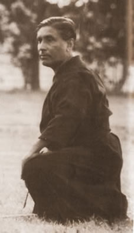

A BUDO ALAPELVEIAZ ALÁBBI FEJEZETEK Pascal Krieger : JODO, the way of the stick (1989) vagyis, JODO: a bot útja címû könyvébõl valók. A fordítást a szerzõ beleegyezésével az angol nyelvû szöveg alapján Antal Zita készítette . A magyar szöveget szakmailag Gollob Szabolcs ellenõrizte. Köszönet Szakmány Györgynek a szöveg nyelvi gondozásáért. Az eredeti illusztrációk és kalligráfiák, melyek Pascal Krieger munkái, valamint a fényképek a könyvbõl származnak. Köszönet a Senseinek, hogy engedélyezte a magyarnyelvû változat elektronikus megjelenését. Kérjük a weblapkészítõket, hogy a szöveget ne emeljék át honlapjaikra! Az oldal természetesen szabadon linkelhetõ. Köszönjük! Gollob Szabolcs Shinto Muso Ryu Jodo Menkyo Kaiden
TARTALOM:
A JUTSUtól a DOigSzükségesnek érzem, hogy a történelmi háttérre rávetítsük azt is, hogy mi foglalkoztatta a japánok gondolkodását az Edo-korszak kezdetén. Ez tisztább képet ad majd az egyes KOBUJUTSUk KOBUDÓvá fejlõdésérõl. Két és fél évszázad alatt a japán gondolkodásmód jelentõs - forradalminak is nevezhetõ - változáson ment keresztül, mely teljesen zavartalanul ment végbe. Ez a gondolkodásmód pontosan az azt elnyomó erõbõl táplálkozott.
Lekötni a gondolkodástSenki sem kényszeríthet egy egész nemzetet arra, hogy jogi és társadalmi kényszerzubbonyban éljen, anélkül, hogy valamilyen magyarázattal és eszközzel szolgálna e sors elfogadására. A Bakufu a Chu Hsi (japánul Shushi) konfucianizmus elterjedését támogatta. Chu Hsi egy Shung-dinasztiából származó (XII. század) filozófus volt, filozófiája nagyra becsülte a feljebbvalók iránti hûséget, a gyermeki engedelmességet, a közösségtudatot és a hatóságok tiszteletét; az ilyesfajta filozófia értelemszerûen a Bakufu érdekeit szolgálta. A háborús évszázadokat követõen végül visszatért a béke. A harcosoknak és közembereknek arra is jutott ideje, hogy elgondolkodjanak saját körülményeiken, ennek a zárt társadalomnak a keretei között. Miközben a Bushi saját fölöslegességének egyértelmûvé válása miatt egyre frusztráltabb lett, a közemberek olyan önkifejezési módok után kutattak, melyek nem estek a feudális cenzúra alá. Mindkét társadalmi réteg megpróbálta kiszabadítani magát abból a kényelmetlen szerepkörbõl, melyet a Tokugava alakított ki számára. Annak ellenére, hogy szigorú megkülönböztetések választották el õket, a Bushi és a közemberek is a maguk módján elnyomottnak érezték magukat. Hogy türelmetlenségüket enyhítsék, mindkét osztály a hajlamainak megfelelõen a vallásban, vagy a kicsapongó örömökben keresett vigaszt, és mindezt egy szellemi javakban szegény társadalomban. Ami az örömöket illeti, azok keserû utóízt hagytak, így a Bushi és a közemberek egy általános szellemi szabadság iránti vágyban közeledtek egymáshoz. Hamarosan egy másfajta konfucianizmus is megjelent, ellensúlyozva a Chu Hsi ortodoxiát: Wang-Yangming (1472-1529) rendszere (japánul: Oyomei). Ez a tan az egyént helyezte elõtérbe. Nagyobb hangsúlyt fektetett az intuícióra, mint az intelligenciára. Wang-Yangming azt állította, hogy az embernek uralnia kell elméjét, és önmaga tanulmányozásán keresztül kell fejlõdnie. Inkább cselekvés, mint szavak, inkább egyéni érdem, mint öröklött kiváltságok. (Ez az utolsó pont aggasztotta a Bakufu-kormányt, melynek rendszere örökletességen alapult. A Tokugavák élesen bírálták ezt az új elképzelést és számûzték fõ terjesztõit.) E tan hasonlított a zenre, és kifejezetten a cselekvésképtelen Bushi ellen irányult, akik nem tudták, hogyan szabaduljanak meg fölös energiáiktól. Arra szolgált, hogy békére tanítsa õket. Egy másik jelentõs befolyás is érte a japán gondolkodást: a taoizmus. Lao Tzu és Chuang Tzu szerint a Tao (japánul: DO) névtelen és megnevezhetetlen. Olyan egész, amelybõl minden származik és minden oda is tér vissza. A japánokban kevés hajlandóság mutatkozott az elvont fogalmak iránt, jobban kedvelték a kézzelfoghatóbb konfucianista értelmezést, mely szerint a Tao egy megnevezett és néven nevezhetõ fogalom, amely mindazonáltal meghaladja mind a természetet, mind az embert. Így õsi, kínai taoista elveken nyugszanak annak a gyökerei, amit a japánok DOnak (vagy MICHInek) neveznek. Ezek az elképzelések a sintoista tanokkal és a kor szociopolititikai nézeteivel is keveredtek, így hozva létre egy olyan ösvényt, melyet az életünkben követhetünk. Ez az ösvény vég nélküli, mélyre ható, szigorú és nehézségekkel teli. Követni kell annak érdekében, hogy elérjük a belsõ fejlõdést, és végül önmagunk tökéletesítéséhez vezessen.
A KOBUJUTSU KOBUDÓvá fejlõdéseA tanultabb Bushi volt az elsõ, aki egyfajta szellemi szabadság felé törekedett, melyet arra alapozott, amit e filozofikus elvekbõl szûrt le. Így lett a BUDO ennek a szellemi szabadságnak a kifejezõje. Annak az intellektuális nyughatatlanságnak az egyik következménye volt, amely végül szétzúzta a Bakufu támogatását élvezõ konfucianizmus korlátolt szerkezetét. Valójában elég ironikus, hogy a konfucianizmus kellett, hogy hozzásegítse a japánokat a feudalizmus igájának lerázásához. A KOBUDO támogatói, a KOBUJUTSU számos elemének átvételével együtt, jelentõsen kiszélesítették a KOBUDO szellemi vonatkozását. A KOBUJUTSU-gyakorlónak kétsége sem volt azt illetõen, hogy csak egy olyan filozófiai természetû tanulás bír tényleges értékkel, amelyet tettekre alapoztak. Az ilyesfajta tanulás hosszabb és keményebb volt, mint a harcmûvészetek szavakra alapozott, logikus megközelítése. A KOBUDO követõi teljesen elfogadták ezt az elképzelést. Ugyanakkor, míg a BUJUTSU a harcmezõkön is eredményes és hatékony, vasakaratú fiatalembereket képzett, akiket csak a becsület és lojalitás alapelvei vezéreltek, addig a BUDO sokkal mélyebb tanítást hirdetett. A BUDO-gyakorlónak a természettel való harmóniát kellett keresnie. Nap mint nap végzett gyakorlataival az ideális emberi viselkedésre törekedett, mely törekvés eredménye az egyén a közösség felmagasztalása lett. A DO kulturális célja egyszerûen az volt, hogy bárki számára lehetõvé tegye, hogy önmaga legyen, magamutogatás nélkül, és hogy gyarapodjék a másokkal való gyümölcsözõ találkozásokon keresztül. A DO az élet átfogó megértéséhez vezet, egy erõteljes személyes tapasztalaton keresztül. A DO-formák ezért az egyestõl az egyetemes felé mutató életfelfogást támogatták.
A technikai következményekA harcmûvészetek harci utakká, tanokká fejlõdése a következõ technikai következményekhez vezetett: Specializálódás - Számos RYU specializálódott egyetlen fegyverre vagy mûvészetre. Hagyományosan elképzelhetetlen lett volna, hogy egy BUSHIt csak egy részterületre képezzenek ki. A harci technikák mély és széles körû ismerete rendkívüli fontossággal bírt. A Bushi dönthetett úgy, hogy egy fegyverre vagy mûvészetre specializálódik, de meg kellett hogy ismerje a lehetõ legtöbb fegyvert, hogy ne essen zavarba, ha egy olyan ellenféllel kerül szembe, aki az övétõl eltérõ fegyvert visel. A specializálódás felé tartó irány fokozatosan alakult az Edo-korszak alatt és a XIX. században, a modern harci tanok születésekor vált teljesen széleskörûvé. Majd elérte azt a pontot, mikor egy modern tan gyakorlóját kirekesztettként kezelik, ha párhuzamosan mást is gyakorol. Ez az általános hozzáállás nagyban erõsítette a szektásodást az olyan különbözõ tanok között, melyek azonos filozófiai célok elérését tûzik ki maguk elé. Mindenki azt állítja, hogy az õ ágazata a legjobb (hatékonyság szempontjából). Úgy tûnik, senki sem ismeri fel, hogy ez a túlzott specializálódás akadályozza a harcmûvészetek és harci tanok egységként való megértését. Az én személyes véleményem errõl az, hogy a mi edzésmódunk és a klasszikus BUSHIé között nagyon kevés a hasonlóság. Az a különös szemlélet, az a mértékletes életmód, valamint az intenzív gyakorlással töltött hosszú órák és a teljes odaadás nem illeszkednek a mi modern életünkbe. Egyszerûen túl nehéz lenne számos harcmûvészetet az alapoktól kezdve megtanulnunk: az elhivatottság és a megfelelõ szellemi környezet hiánya ezt nem teszi lehetõvé. Egyetlen tanításra koncentrálni, egyetlen Mester iránti teljes odaadással: számomra ez az, ami a BUDO-tanuláshoz alapvetõ fontosságúnak tûnik. Ugyanakkor egy adott szint fölött (Nyugaton 2. vagy 3. dan, Japánban, például a Judoban, Kano JigoroSensei (a mûvészet alapítója) minden 6. danos tanítványt arra ösztönzött, hogy tanuljanak egy másik mûvészetet is. Aikidót és Jojutsut (ShindoMusoRyu, Shimizu) éveken keresztül hivatalosan is tanítottak a Kodokanban.), véleményem szerint ugyanilyen lényegbevágó egy második, vagy akár harmadik ágazat tanulmányozása. Az elme kiszélesítésének vágya természetes következménye kell, hogy legyen annak, hogy egy adott ágazatban már megszereztük a biztos alapokat. A pusztakezes harc megjelenése - A XVII. század elején egyre kevesebb BUSHI viselt páncélt (YOROI). Ennek a következménye az volt, hogy számos pusztakezes harci rendszer jelent meg, ami pedig a szamurájok szemléletében is változást eredményezett. A klasszikus RYUk addig a YOROI KUMI-UCHI (birkózás páncélban) megnevezés alá csoportosították a pusztakezes technikákat. Ezek leginkább az ellenfél kibillentésére, ezt követõen pedig a YOROI-DOSHI és a KABUTO-WARI - jellegû fegyverek használatára épültek. A JUJUTSU vagy az ATEMI alkalmazása nagyobb fájdalmat okozott volna annak, aki adta, mint annak, aki kapta. A páncélzat idejének fokozatos leáldozásával ezek a harcmûvészetek egyre nagyobb teret hódítottak, leginkább az olyan közembereknél, akik természetesen nem viselhettek fegyvert. A JUDO, az AIKIDO és a KARATE-DO ekkorra felváltották a fegyveres harcmûvészeteket, mivel ezek az új tanok jobban vonzották a tömegeket. A fegyverek hiánya, különösen a JUDO és a KARATE-DO esetében, ezeket inkább küzdõsporttá, mint harcmûvészetté teszi. A klasszikus technikák módosításai - Számos RYUt magával ragadott az olyan új ötletek áramlata, melyek a harcmûvészetek spirituálisabbá válását szorgalmazták, és módosítottak technikáikon, hogy megfeleljenek a spirituális gyakorlásnak. A harcra készítõ gyakorlás, amely csak keveseknek szólt (a BUSHInak), oly módon alakult át, hogy mindenki számára nyitottá és a mindennapi életben is hasznosíthatóvá vált. A változás leginkább a fontossági sorrendek újraértékelésében jelentkezett. Míg a KOBUJUTSU a harc gondolatát helyezte minden más elé, ami után a fegyelem és az erkölcs következett, addig a KOBUDÓban az elsõleges hangsúlyt az erkölcs kapta, utána a fegyelem, és végül az esztétikum. A harc gondolatát nagyon gyakran egyszerûen figyelmen kívül hagyták. Az IAIJUSTU és IAIDO közti átütõ különbség kiváló példa erre. Azonban nem szabad figyelmen kívül hagyni azt sem, hogy a KOBUDO támogatóinak többsége már a Tokugava-korban született és elenyészõ tapasztalattal rendelkezett a harcról.
Vázlatos osztályozásEredeti szándékom az volt, hogy mellékeljek egy táblázatot, amely osztályozta volna az összes japán harcmûvészetet és tant. Meglepõdve láttam, hogy más, a témában nálam jártasabb szerzõk sosem gondoltak még erre. Hónapokig tartó kutatások után le kellett tennem errõl az elképzelésrõl, mivel ez a vállalkozás túl összetettnek bizonyult. Ahhoz, hogy egy ilyen táblázat körültekintõ és pártatlan legyen, nagyon mélyreható kutatásokat kell végezni, és kimondhatatlanul sok tárgyra ki kell térni. Egy BUJUTSU vagy BUDO megjelenésének történelmi hátterét ugyanúgy meg kell vizsgálni, mint fejlõdésének társadalmi körülményeit, filozófiai irányultságát vagy morális tanításait. Mindezekhez ott vannak még minden egyes mûvészet különbözõ alosztályai, és a változások, amelyeken keresztülmentek a történelem során. Azok után, hogy közelrõl szemügyre vettük egy harcmûvészet fejlõdésének kacskaringóit, gyakran szembesülünk azzal a ténnyel, hogy több megnevezés is illik rá. Egyre jobban meg vagyok róla gyõzõdve, hogy ami a harcmûvészetek osztályozásakor a határesetek besorolását meghatározza, az a spirituális tényezõ. Úgy éreztem, ilyesmi túl nagy vállalkozás volna ennek a könyvnek a keretein belül, de bizonyos alapfogalmakkal mindenképpen meg akartam ismertetni az olvasót. Így egy kevésbé kötött és nem annyira konkrét osztályozást alkalmaztam, bár tisztában vagyok vele, hogy ennek a legnagyobb hibája a szükségszerû túlegyszerûsítés lett. Amikor megpróbálunk besorolni egy harci jellegû tevékenységet, a legfontosabb, hogy meghatározzuk, hogy BUJUTSU-e, vagy BUDO. JUTSU és DOMint elõbb említettem, egy BUJUTSU céljai mások, mint egy BUDÓé.
Mindig volt némi tisztázatlanság ezekkel a hangsúlyokkal kapcsolatban. Egy BUDO-gyakorló számára nehéz elfogadni, hogy harcmûvészetében a "harci hatékonyság” mellõzött. Ugyanakkor az, hogy a felsorolt három szempont élvez elõnyt, semmiképp sem jelenti azt, hogy a harci, vagy a hatékonysági oldal ne lenne jelen. Éppen ellenkezõleg. Bizonyosan jelen van - ezért tartják "harci” tannak. De ennek a tannak a lényege a személyiség nevelése: lehet, hogy csupán a hatékonysága miatt is lehetne létjogosultsága, de mindazonáltal túl is haladja a hatékonyságot, lehetõvé téve az egyén számára, hogy morálisan fejlõdjön az öntanulmányozáson és önfegyelmen keresztül, és törekedjék egyfajta esztétikum elérésére is. A BUJUTSUt egy elit hozta létre, hogy megvédjen egy közösséget, melynek létezése veszélyben volt, vagy lehetett. Ez természetesen magában foglalja a harc elkerülhetetlenségét. Egy BUJUTSUnak használhatónak és gyakorlatinak kell lennie. A BUDO békeidõbõl származik. Úgy alkották meg, hogy bárki, társadalmi rétegétõl függetlenül fejlõdést érhessen el vele, egy mély személyes élményen keresztül. A BUDO ahhoz vezethet, hogy megértjük az életet, mint egységet, és hogy könnyebben megtaláljuk a helyünket egy békére és harmóniára törekvõ társadalomban. A BUDOnak spirituálisnak kell lennie. De ezeket a meghatározásokat még tovább kell bontani, hogy el lehessen dönteni, mely kategóriákba (klasszikus, vagy modern) tartozik egy mûvészet vagy tanítás. KOBUJUTSU és SHINBUJUTSUBár a fõbb irányelvek hasonlónak tûnnek, azért valójában vannak különbségek egy klasszikus és egy modern BUJUTSU között. A klasszikus BUJUTSUt (KOBUJUTSU) az Edo-korszakot megelõzõ idõszakban alakították ki, amikor az egész ország egyetlen harcmezõ volt és valamennyi harcos páncélzatot, vagy más, a testét védelmezõ eszközt viselt. A KOBUJUTSUn belül számos mûvészet nem a szó szoros értemében vett küzdelmi mûvészetek, mint például a CHIKUJÔJUTSU (az erõdépítés mûvészete), a SENJUTSU (a stratégia mûvészete) és a SUIEJUTSU (a páncélban úszás mûvészete), de kétségtelenül harcmûvészetnek minõsülnek. Szem elõtt kell tartani azt is, hogy a KOBUJUTSUkat hivatásos harcosok számára fejlesztették ki, lehetõvé téve számukra, hogy más hivatásos harcosokkal szálljanak szembe, ami nagyon magas szintû technikai jártasságra utal. Végül, a KOBUJUTSU a BUSHIk kiváltsága volt, akik a társadalmi hierarchia tetején álltak, és ennek megfelelõen tanultak voltak. Ez azt is jelenti, hogy egy KOBUJUTSU automatikusan kapcsolódott egy adott etikai rendszerhez, melynek alapelemei: tisztelet, hûség, tisztesség és bátorság; olyan tulajdonságok, amelyeket minden harcmûvészet nagyra becsül. A modern BUJUTSU (SHINBUJUTSU) két különbözõ kategóriára bontható: a katonai SHINBUJUTSUra és a civil SHINBUJUTSUra. Katonai SHINBUJUTSU. Elég nehéz meghatározni, mikor láthatott napvilágot a SHINBUJUTSU. Egyesek azt állítják, hogy az Edo-korszak elején jelent meg, mikor a páncélzat eltûnõben volt. Mások inkább a Meiji-restauráció mellett érvelnek. Mindkét elképzelés megállja a helyét. Annyi bizonyos, hogy a katonai SHINBUJUTSUról szerzett legfrissebb japán élmény a második világháború volt. A katonai célokat szolgáló SHINBUJUTSU nem különbözik olyan sokban a KOBUJUTSUtól: az ellenfél technikailag magas szinten áll és hatékony védelemmel rendelkezik (páncélborítás, radar, kifinomult technológia). Az ütközet célja az ellenfél elpusztítása marad, a stratégia is ugyanúgy az ellenfél védelme gyenge pontjának megtalálásán alapszik. Ugyanakkor vannak jelentõs különbségek: a kifinomult rendszerek már nem kívánják meg, hogy a szemben álló felek tényleges fizikai kapcsolatba kerüljenek egymással. A bátorság és a jó kondíció, amely az ilyen kapcsolathoz elengedhetetlen, már nem természetes velejárói egy modern katona jellemzésének. Napjaink hadseregének hatalmas gépezete kirekeszti a BUSHI sokoldalúságát és korunk katonáját szükségszerûen szakterületéhez szegezi, amitõl még sebezhetõbbé válik. Végül, egy hadsereg összetettsége és a telekommunikáció csodái már nem kívánják meg a hadparancsnokoktól, hogy kint legyenek a harcmezõn, és ez gyakran elvágja õket a küzdelem realitásától. A civil SHINBUJUTSU egy viszonylag békés társadalom gyümölcsei. A civil SHINBUJUTSUk többségének elsõdleges célja, hogy a kormány erõit a törvények és a rend fenntartására használatos technikákra oktassa. Hétköznapi emberek szintén megtanulhatják ezeket a technikákat, saját biztonságuk és családjuk védelme érdekében. Ezeket a hivatalosan is elismert technikákat elsõsorban a rendõrség használja. A példák közt van a TAIHOJUTSU (a letartóztatás mûvészete) és a KEIBOJUTSU (a rendõrségi gumibot mûvészete).
Ugyanakkor számos különbség is van a civil SHINBUJUTSU és a KOBUJUTSU között. Mindenekelõtt az, hogy a SHINBUJUTSU-gyakorló a jelen társadalmi körülmények között elsõsorban a a rendõr, nem egy képzett ellenféllel áll szemben, és nem célja, hogy mindenáron megölje õt. Ellenfele leggyakrabban egy harcmûvészetekben járatlan bûnözõ, és a rendõr dolga, hogy letartóztassa és bíróság elé állítsa. Az ehhez szükséges gyakorlat más természetû, és a technikák messze nem olyan hatékonyak és hatásosak, mint a klasszikus BUJUTSUban, vagy a katonai SHINBUJUTSUban. Mi több, a katona és a rendõr nem egy külön társadalmi rétegbõl származnak. A BUSHIk magasztos harci erényeit felváltotta a katonák vagy az egyszerû közemberek kötelessége, nagyobb összhangban a modern körülményekkel. KOBUDO és SHINBUDOItt még nagyobb a különbség. A KOBUDO az Edo-korszakban jött létre, a SHINBUDO (vagy GENDAIBUDO) viszont a modern (1868 utáni), már a nyugati elképzelésektõl nagyban befolyásolt Japán gyümölcse. Míg a KOBUDÓk jobbára módosított KOBUJUTSUk, vagy olyan, a XII. századi Japánban újonnan létrehozott mûvészetek, melyek segítették az egyén spirituális fejlõdését és a természettel alkotott összhangot, addig a SHINBUDO a harci tanoknak jellemzõen a sportos és a szabadidõs jellegét hangsúlyozza. A KOBUDO, akár a KOBUJUTSU, leginkább a KATA módszerét használja, míg a SHINBUDO szinte teljesen mellõzi ezt a módszert, és szívesebben alkalmaz szabad gyakorlást. A SHINBUDOk többsége nem használ fegyvert, így a szabad gyakorlás veszély nélkül végrehajtható. Ezen kívül az átadás módszere is nagyon más. A KOBUDO-gyakorló személyre szóló útmutatást kap, melyben nagy szerepet játszik az intuíció (KAN), míg a SHINBUDÓban használatos tömeges oktatás nem közvetítheti ezt a fontos alapelvet.
ALAPELVEKBevezetésHa BUDÓról beszélünk, alapelvnek a saját tapasztalat útján megszerzett intuitív tudást nevezzük. Ezeket az alapelveket nem lehet megfelelõen megérteni elméleti magyarázatokon keresztül. A kezdõk tudnak, hallanak róluk, de még nem értik meg õket. A tényleges megértéshez a test, az értelem és az érzelmek egyszerre szükségesek. A következõképpen lehetne ábrázolni a különbséget aközött, ha valaki csak tud az alapelvekrõl, vagy pedig érti is õket: Az, aki tud egy alapelvrõl, az tud róla beszélni. Az, aki megérti, alkalmazhatja. Az, aki teljes mértékben megértette, ösztönösen alkalmazza õket, mindenhol és mindenkor. A fentiek tükrében mi értelme lehet annak, hogy az alapelvekrõl beszéljünk, mikor azok csak tapasztalati úton érthetõek meg? Mi több, ezek a fogalmak csak akkor gazdagítják a tanítványt, ha saját erõfeszítései során fedezi fel õket, és minden egyes felismerés magával von egyfajta satorit (megvilágosodást). Mégis az alapelvekrõl szóló fejezet mellett az a tény szól, hogy egyrészt kísérletet tesz az összefüggéseik feltárására, másrészt felvázolja azt az általános irányt, amely mentén a keresésükre indulhatunk. Ezeknek az oldalaknak csupán az a céljuk, hogy az olvasó elé tárják az alapelveket. Az hogy meg is értse õket, már kizárólag csak rajta múlik egyéni tapasztalatain keresztül. Az alaplevek itt található leírása saját tapasztalataim gyümölcse, ennek megfelelõen teljesen szubjektív. De ha nem hallottam volna már róluk elõzetesen, valószínûleg én sem ismertem volna fel õket, és bizonyosan nem lettem volna képes arra, hogy továbbadjam õket. Amellett, hogy fenntartom, hogy ezeket az alapelveket meg kell tapasztalni, mindegyiket a megfelelõ idõben, úgy gondolom, hogy az alább vázolt lista - amely persze messze nem teljes - az önállóan gyakorló csoportok segítségére lehet abban, hogy felfedezzék a SHINDO MUSO RYU nem mindennapi gazdagságát. Végezetül, vajon nem éppen ezeknek az alapelveknek a megértése a KOBUDO gyakorlás célja? Csakis a fegyverek használata miatt gyakorolni egy harcmûvészetet nem olyan, mint idegen nyelven verset szavalni? Ugyanúgy fogják ezek az alapelvek értelemmel megtölteni az általunk gyakorolt harcmûvészetet, ahogyan a szavak ismerete befolyásolja olvasásunkat.
1. JUNANSHIN vagy NYUNANSHIN - képlékeny elme(A kezdetektõl fogva dolgozni kell rajta) Az alapelvek egyetemes igazságok: temérdek mag, mely a "DO” ösvényére hullik. Ha kemény földre kerülnek, sosem hajtanak ki, így meghatározó fontosságú, hogy megmunkáljuk a talajt, ha KOBUDO tanulására vállalkozunk. Egyedüli módja annak, hogy a KOBUDÓt bármilyen eredménnyel tanulmányozzuk - és tényleg úgy gondolom, hogy ez a kizárólagos út, - ha hozzáállásunk tartalmazza a következõ öt összetevõt: türelem, 2. bizalom, 3. alázat, 4. rugalmas elme, 5. nyitottság Ha a gyakorló hozzáállása nem változik ennek megfelelõen a tanulás folyamata során, az eredmény csak kudarc lehet. A megfelelõ hozzáállás a JUNAN: rugalmas és SHIN: elme (vagy NYUNANSHIN) fogalmakkal fejezhetõ ki. A tanár elõször az ezt tartalmazó öt komponens csiszolásán fog dolgozni. Hadd vezessek le valamit az öt elem fontosságából. A türelmetlen tanítvány már tudat alatt kijelöl magának egy célt és egy idõegységet, amely alatt a célt teljesítenie kell. Elméjét erre a képzeletbeli célra fókuszálva képtelen lesz arra figyelni, hogy hová lép, és lábbal tipor az elvetett magokra. Nem lesz meg benne az elegendõ türelem, hogy hagyja, hogy egy adott mennyiségû munka dolgozzék benne. Gyors eredményt akar. Meg kell tanulnia, hogyan emelkedjen felül türelmetlenségén, és egyszerûen haladjon, anélkül, hogy azonosulna a már megtett lépésekkel vagy az elérendõ céllal. Minden figyelmét inkább az adott pillanatra kell összpontosítania (ICHI GO ICHI E). A kétkedõ tanítvány olyan módon közelíti meg a tanítást, hogy minduntalan a más területeken szerzett tudására hivatkozik. Ízekre szed mindent, és ha nem ért valamit, akkor vitába száll. Logikus gondolkozással rendelkezik, és nem fogadja el - vagy csak vonakodva - ,ami nem bizonyítható. Meg kell tanulnia bízni mesterében és az általa választott tanításban. A KOBUDÓban semmi sem bizonyítható, a hitet mindenki maga szerzi meg és csakis a maga számára. Az arrogáns tanítvány önnön nagyságának biztonságával felvértezve nehezen ismeri be, hogy semmit sem tud. A kezdõ szerepkörben korlátozottnak fogja magát érezni. Minduntalan megpróbálja igazolni hibáit és hiányosságait. Egója leküzdhetetlen akadályokat fog emelni fejlõdése útjába. Azon kell majd dolgoznia, hogy ráébredjen, nem körülötte forog a világ, õ is csak egy a sok jelentéktelen vándor közül, aki keres. A makacs tanítványt elsõsorban karakterének rugalmatlan jellemvonása fogja vezérelni. Végigszáguld a DO útján a nélkül, hogy figyelmet szentelne annak, merre is tart valójában. De mikor elérkezik az ideje, hogy megkérdõjelezze viselkedését elméje, amely nem szokott hozzá az alkalmazkodáshoz, már rögzült lesz. Csak fenntartásokkal fog beleegyezni abba, hogy más irányba haladjon, mint amit õ gondolt helyesnek, mivel egy csökönyös öszvér. De ha hasonlóan makacsul próbálja felszabadítani magát elméje korlátjai közül, akkor nincs minden veszve. Hibákon és kiábrándultságon, kudarcokon és vereségeken keresztül megsebzett lelke lágyul és alkalmazkodik a BUDO ösvényén rejlõ váratlan változásokhoz. Az, aki nem elég rugalmas, általában a következõ kifogással keresi meg tanítóját: "Adok neki egy esélyt, (mármint: én teszek szívességet), de csak heti egyszer tudok lejönni, (semmit sem tudok a végzendõ munkáról, de ezek a feltételeim), mivel vannak más kötelezettségeim is stb.” A KOBUDO rengeteg idõt és erõfeszítést kíván. Egy ilyen elfoglalt embernek döntenie kell. A KOBUDÓt nem lehetséges egy héten egyszer komolyan gyakorolni. A KOBUDO napi gyakorlat és legalább heti két-három edzés szükséges hozzá tanárral. Az edzések és a társasági élet a gyakorlók szabad idejének jelentõs részét igénylik. Az "elfoglaltság” alapvetõ probléma és elsõdleges oka a lemorzsolódásnak. Összefoglalva: amikor valaki arra vállalkozik, hogy a KOBUDÓn, és az önmegismerésen keresztül próbálja megérteni az életet, akkor idõt kell erre áldoznia, befogadónak kell lennie, meg kell bíznia választott vezetõjében, és türelmesen kell elõre haladnia, lépésrõl lépésre, és különösen ébernek, figyelmesnek és fogékonynak kell lennie. A JUNANSHINnak nevezett hozzáállásban mindezek a tulajdonságok benne rejlenek. Alapvetõ fontosságú a kezdetektõl fogva figyelmet szentelni nekik, mivel szükség van rájuk, egészen az út végéig. 2. ZANSHIN - éberség(Dolgozni kell rajta a kezdetektõl, de fokozatosan.) Nem könnyû visszaadni a ZANSHIN jelentését. Szó szerint a ZAN jelentése elhagyni, hátrahagyni, a SHIN jelentése pedig elme. Ez nem sokat segít. De a fogalom meghatározhatatlansága azzal magyarázható, hogy magában foglal számos más fogalmat is, melyekrõl majd külön is esik szó. Fogadjuk hát el, hogy ez a pár megjegyzés a Zanshinról egy olyan bevezetõ, amely éppúgy érinti a METSUKE, SHISEI, MA-AI, KIAI, KIME, RI-AI kiegészítõ fogalmakat, mint olyan általánosabb fogalmakat, mint: FUDOSHIN, KAN-KEN, MUGA-MUSHIN stb. A ZANSHIN elve két lépésben hagyományozódik át. Az elsõ szinten a fogalom tartalmáról mit sem tudó kezdõnek meg kell elégednie a külsõ megnyilvánulás másolásával. Az ellenfél szemeire összpontosított figyelem, egyenes és szilárd test (lehetõvé téve a gyors elmozdulást), és szükséges ezen kívül a távolság akkurátus szem elõtt tartása - mindig épp hatósugáron kívül lenni. Energikus KIAI, a mozdulatok megfelelõ kontrollja és a kellõ idõzítés az utolsó simításokat is hozzáadják a ZANSHIN összképéhez. Csak a ZANSHIN legfontosabb elemeit vázoltam fel, de hozzá kell tennem, hogy ezeknek erõteljes tartást és határozott jelenlétet kell sugározniuk.  Azonban ez csak a külsõ megjelenés. Ha ez nem a kivetülése egy belsõ ZANSHINNAK, akkor ez csak hamis ZANSHIN, tényleges tartalom nélküli üres formák és fogások. A második fázis abból áll, hogy a megfelelõ mozdulatok és a helyes hozzáállás egy mélyebb dimenziót nyernek. Ez egy sokkal nehezebb feladat, mint ami az elsõ fázisban volt. Az elhagyások folyamata ez, míg el nem érjük a teljes belsõ ürességet. Akkor válhat csak valaki teljesen befogadóvá, ha minden szubjektív érzelemtõl mentesült. Az éberség nem azonos azzal az állapottal, amelyeket az aggodalom, félelem, szorongás és idegesség uralnak. De ez nem is a mindent betöltõ nyugalom állapota. Ha megpróbáljuk megadni a ZANSHIN jelentését, azt mondhatjuk, hogy ebben a tudatállapotban az ember fizikuma rejtett éberségi állapotában van, elméje teljesen kiürített és a legapróbb jelre is fogékony. A ZANSHIN tiszta formájában egy kegyelmi állapot, amelyben teljesen felkészültnek érezzük magunkat. Ez a BUDO gyakorlók által megtapasztalt legkülönösebb érzések egyike. Egy leírhatatlan vibráló jelenségbõl idõvel a ZANSHIN tényleges valósággá válik. A kezdetektõl fogva, a SHINDO MUSO RYU valamennyi fázisán át fejlõdik ki. Az elsõ KATÁtól kezdõdõen hihetetlen éberség szükségeltetik a kezdõktõl. Mivel nincsenek hozzászokva ilyesfajta erõfeszítésekhez, esetenként elviselhetetlennek tûnõ terhelést fognak érezni. Mi több, érdekes a mindennapi dolgukat végzõ embereket figyelve rádöbbenni arra, hogy civilizációnk mennyire nem tartalmazza a ZANSHINT. Beállni egy ajtó elé, amely bármikor ránk nyílhat, megbotlani valamiben, megfogni egy forró edényt, fölállva beverni valamibe a fejünket, beleütközni valakibe vagy visszalökni; és a mindennapi élet számtalan egyéb figyelmetlensége: ajtóban felejtett kulcsok, elkallódott értéktárgyak stb. Ezek mind a rendezetlen elme jellegzetességei, az érzékenységben hiányt szenvedõ test ismérvei. A ZANSHIN gondolatának magas szintre fejlesztése nem lesz híján a mindennapi életben tapasztalható pozitív következményeknek sem.
3. METSUKE - a tekintet összpontosítása(A kezdetektõl fogva dolgozni kell rajta.) ME: szem, TSUKE: odaszorított, odaragasztott. A METSUKE fogalma a ZANSHIN egyik legszembetûnõbb eleme. A küzdõ felek általában egymás szemébe néznek, mivel a szemek a lélek tükreiként gyakran olyan érzelmeket is elárulnak, amelyeket a test többi részének sikerült elrejtenie. A METSUKE mûvészete abból áll, hogy mindent látunk, anélkül, hogy mi magunk bármit is láttatnánk. Látni mindent... Minél inkább rögzítjük a tekintetünket egy adott pontra, annál behatároltabbá válik a látóterünk. Így ahelyett, hogy szorosan az ellenfélre szegeznénk tekintetünket, úgy kell ránéznünk, mintha egy távoli hegycsúcsra tekintenénk (ENZAN WO MIRU). Nem hagyd, hogy karja vagy fegyverének mozdulatai elvonják a figyelmedet. Higgadtan tartsd szemmel ellenfeled testének középvonalát, mivel ez láttatja a legjobban, hogy mire készül. Ennek az elfogulatlan és átfogó látásmódnak köszönhetõen kivételes elõrehaladást tapasztalhatunk a látás terén. Figyelmünk lankadása nélkül bármely váratlan akadály elõre láthatóvá válik számunkra. Akik rendszeresen vezetnek autót, bizonyára jól ismerik ezt a hatást és tudják, hogy mi sem veszélyesebb, mint tekintetünket az elõttünk haladó jármû farára szegezni. ... anélkül, hogy bármit is felfednénk. Ez valami egészen más. A harc kiváló táptalaja az olyan szubjektív érzelmeknek, mint a félelem, tétovaság, zavar, harag, vagy öröm. Annak érdekében, hogy ne fedjük fel tekintetünkön keresztül ezeket az érzelmeket - mert mindig árulkodóak - nemcsak a kontrollt kell kialakítani felettük, hanem el kell érni, hogy ne is érezzük õket. Ehhez természetesen önmagunk hosszas tanulmányozása szükséges, ami túlterjed a DOJO keretein. Hamar olyan jelenségekkel találjuk magunkat szemben, melyeknek látszólag nincs közük a KOBUDÓhoz, de egy késõbbi fázisban foglalkozni fogunk velük.
4. SHISEI (testtartás)(A kezdetektõl fogva dolgozni kell rajta) Ha egy kicsit is ismerjük a japán harcmûvészeti alapelveket, akkor nem kerülhette el figyelmünket, hogy néha már bosszantóan nagy jelentõséget tulajdonítanak ennek a gondolatnak. Magam is éveken keresztül szenvedtem az ehhez hasonló kemény utasításoktól: "Állj egyenesen, engedd le a vállad, húzd be a feneked!” - így kijelenthetem, hogy a Budónak ez a vetülete számos nehézséget okoz a tanítványnak, különösen, ha nem keleten született. Kétségtelen tény, hogy egy nyugatról származó ember testfelépítése sokban különbözik a keletiekétõl. Egy ázsiai vállai, még ha szélesek is, mégis nyaktól lefelé lejtenek, míg egy nyugati ember vállai gyakran a nyakra merõlegesek. Ha az a feltételezés, hogy egy nyugati tanítvány hajlamosabb arra, hogy inkább használja a vállait, mint csípõjét, ez csak még jobban hangsúlyozza a vállak "magas” helyzetét. A nyugatiak így arra kényszerülnek, hogy külön erõfeszítéseket tegyenek annak érdekében, hogy a lehetséges legalacsonyabb helyzetben tartsák vállaikat - hangsúlyozom a "lehetséges” megfogalmazást -, és hogy megtanulják jobban használni csípõjüket. A hátnak egyenesnek kell lennie, a lábaknak pedig szilárdan a talajon kell állniuk. Ez a helyzet jobb légzést és gyorsabb mozgást tesz lehetõvé. Úgy gondolom, csak azokat helyes figyelmeztetni, akiknek a SHISEI gondolata a rögeszméjükké vált. A KOBUDO sosem támogatta a tanítványok "robotosítását”. Mindenkinek megvan a saját testtartása. Anélkül, hogy lemondanánk a testtartás kívánatos fejlõdésérõl, ajánlott valamennyire figyelembe venni az egyének testfelépítését is. Igaz, hogy a jó tartás nagyon esztétikus és hogy az esztétikai szempont, fellengzõsség nélkül a KOBUDO nélkülözhetetlen eleme. A helyett azonban, hogy egy tanítványt silány testtartásával zargatnánk, én személy szerint arra ösztönözném, hogy keresse meg, hogyan tudja megõrizni egyensúlyát egy stabil pozícióban. A szabadtéri gyakorlás kiváló módja a SHISEI tesztelésének. A nedves fû, a kövek, az egyenetlen talaj és a lejtõk rögvest arra késztetnek, hogy változtassunk testtartásunkon. A gyakorlás e módja bizonyosan csorbítja a technika esztétikusságát, annak felismerésében viszont segít, hogy a KOBUDO alapelemei közül az esztétika sosem mehet a technikai hatékonyság rovására, hanem inkább ki kell, hogy egészítse azt. Még egy szempont tartozik a SHISEI gondolatköréhez, mely legalább olyan jelentõs, mint az elsõ: a mentális hozzáállás. Ez a "belsõ tartás” méltóságot, egyenességet és tiszteletet sugároz. Olyan viselkedésmód mutatja ezt meg, mely nem tûr semmiféle bárdolatlanságot, nem oda illõ gesztusokat, vagy alakoskodást. A méltósággal viselt nehézségek vagy örömök legalább annyira a SHISEI megnyilvánulásai, mint a kifogástalan testhelyzet. Nehéz megmondani a kettõ közül melyik hat a másikra, de bizonyos, hogy a tökéletes SHISEI csak a külsõ és belsõ hozzáállás teljes összhangjával érhetõ el.
5. MA-AI (a küzdõ felek közti távolság)(A Kihon sotaitól kezdõdõen kell dolgozni rajta.) MA: távolság, AI: összhang. A küzdõ felek közti távolság meghatározása elsõsorban az alkalmazott fegyverektõl függ. A japán harcmûvészetekben a MA-AI különösen precíz. Nem túlzás milliméterekrõl beszélni. Draeger Sensei így szerette megfogalmazni ezt: "Ha ellenfelem meg tudja vágni a ruhám anyagát, az azért lehet, mert én meg tudom vágni a bõrét. Ha õ meg tudja vágni a bõröm, az azért lehet, mert én meg tudom vágni a húsát. Ez a megfelelõ MA AI. ” Célszerû nagy figyelmet szentelni a MA-AInak a legelsõ KIHON SOTAItól kezdõdõen. A MA-AIt a következõ négy értelemben kell alkalmazni:
Akár JOt, akár BOKKENt fogunk, nagyon fontos, hogy kb. 20 cm távolságot tartsunk a gyomor és a közelebbi kéz között. Tudatában kell lenni annak, hogy ha a távolság csökken a JO oldalon, a BOKKEN oldalon viszont megmarad, akkor a két fegyver lényegében azonos hatótávolságra tesz szert, ami azt eredményezi, hogy egyforma lesz mindkét fegyver hatósugara. Észben tartva, hogy a BOKKEN egy "valódi” pengét jelöl, világos, hogy ez a MA-AIban bekövetkezett hiba a valóságban komoly következményekkel járhat.
A SHINDO MUSO RYU-ban a MA-AI leglényegesebb szempontja abban rejlik, hogy a JO 20-25 cm-el hosszabb, mint a BOKKEN. A JODO-technikák jelentõs része erre az alapvetõ különbségre épül, ami úgy helyezi hatótávon belülre az ellenfelet, hogy mi még, ha pár centivel is, de kívül maradunk az övén.
A MA-AI gondolata semmissé válhat a technikák során a fegyverek helytelen használata miatt. Nem kell fizikusnak lenni ahhoz, hogy felismerjük, hogy egy fix tengely körül forgó tárgy esetében a tengelytõl legtávolabb esõ pont forog a leggyorsabban, és az bír a legnagyobb nyomatékkal. A JO és BOKKEN használatakor a célpontra mért csapásra csak a fegyver utolsó 20 cm-e használatos. Ezt a részt "MONOUCHI”-nak nevezik, ami szó szerint: (rész) ami a tárgyat megüti. A kard esetében az a rész, mely a kézvédõtõl (TSUBA) a MONOUCHIig terjed nem sokkal több célt szolgál, mint hogy megtartsa a MONOUCHIt a maga helyén. A JO esetében a technikák széles köre a fegyver egész felületének használatára épül. Ugyanakkor a csapások esetében a MONOUCHI használata olyan, mint a kardé. A legjobb mód arra, hogy megtapasztaljuk a Monouchi használatát, kétségtelenül egy speciális tárgy (TAMESHIGIRI) vágása a karddal, a bottal pedig rugalmas, de tömör célpontra mért csapás.
A küzdõ felek közti távolság háromféle lehet. A tényleges távolságon kívül a mögöttük rejlõ gondolati tartalmak azok, amelyeket be szeretnék mutatni. TOMA: nagy távolság. Ez a Katák, vagy párviadalok kezdetén a két fél közt felvett távolság. A SHINDO MUSO RYUban ez 5 -10 m között mozog (nagyjából 3 tatami hosszú). Más iskolákban lehet hosszabb is. Így mindkét félnek megvan a lehetõsége a gondolkodásra, visszavonulásra, vagy arra, hogy KAMAEt változtasson. Ez a közeledés feladata, hiszen az a pillanat, amikortól már nincs visszaút, még elõttünk áll. CHIKAMA: közeli tartomány. A ZANSHIN intenzitása érezhetõen nõ. A KAMAEnak egyeznie kell. Ezen a ponton már nincs visszaút, még egy vagy két lépés és a két ellenfél sorsa így vagy úgy de összekapcsolódik. UCHIMA: vágó (vagy csapó) távolság. Az ISSOKU-ITTO (egy lépés és egy vágás) gondolatával is szokták jellemezni. Ez a távolság egybeesik a ZANSHIN tetõfokával. A pillanat tört része alatt bármelyen hirtelen támadás indulhat, az egyik vagy a másik irányból, vagy akár mindkettõbõl egyszerre. Csupán egy lépés választja el a MONOUCHikat célpontjaiktól. Ahelyett, hogy megpróbálnám leírni, inkább azt tanácsolom, tapasztalja meg mindenki maga az UCHIMA elviselhetetlen feszültségét. Válasszunk egy ellenfelet, mindketten vegyük fel a KAMAEt és ahelyett, hogy azonnal belekezdenénk a technikába, õrizzük meg pár pillanatig a pozíciónkat, teljes odaadással, vágásra készen. A tapasztalat fel fogja fedni a ZANSHINunk szintjét, a higgadtságunkat, és a gyors válaszmozdulatra való képességünket is. Ha egy kicsit sem inspirál a valódi ütközetekre jellemzõ MA-AI felfokozott érzelmi állapota, akkor szabad utat engedünk a különféle torzulásoknak. Sajnos nemritkán látni olyan tanítványokat, akik a kard középsõ részével vágnak, vagy naiv ábrázattal állnak, nem ismerve fel, hogy még mindig ellenfelük fegyverének röppályáján belül tartózkodnak. A MA-AIra oly módon kell érzékenynek lenni, mintha egy láncra vert vadállattal állnánk szemben. Ha a veszélyes határmezsgyén belülre lépünk, ballépésünkrõl brutális módon szerzünk tudomást. A JODÓban ha az UHIDACHI oldal (kard) hibásan veszi fel a MA-AIt, ez beláthatatlan következményekhez vezethet SHIDACHI (bot) technikájában. Például, ha UCHIDACHI pengéje közepével vágja célpontját, SHIDACHI úgy alkalmazza eredményesen technikáját, hogy egyet hátralép. Mivel a végeredmény kielégítõ, egyik fél sem fogja szükségét érezni, hogy bármit is változtasson, ez pedig egy sor probléma kiindulópontja lesz. Feltételezem, hogy a MA-AI tényleges megértésének egyedüli módja az volna, ha idõrõl idõre elvesztenénk egy darabot az orrunkból, vagy az ujjainkból. Mindemellett nagyon remélem, hogy a lelkiismeretes gyakorlás úgy teszi lehetõvé e fogalom elsajátítását, hogy közben azért egy darabban maradunk.
6. KIAI (egyesített energia)(A Kihontól kezdõdõen kell rajta dolgozni.) KI : energia, AI : összhang. A KIAI valamennyi japán harci út fontos eleme, annyira jelentõs, hogy saját irodalma van, melyben a legnevetségesebb kijelentések is napvilágot láttak. Ki ne hallott volna a harcosról, aki titkos harci kiáltással dermesztette meg ellenfelét? Az itt következõ meghatározás valószínûleg kicsit gyakorlatiasabb. A KIAI a légzés kontrolljába bevont hangzó elem. Az alhas alulsó részébõl ered és a képzett hangnak van egy jellegzetes rezgése. Létrehozásában nemcsak a hangszálak vesznek részt, hanem az egyén mélyérõl jövõ erõteljes energia is. A KIAInak kétféle hatása van, fizikai és pszichológiai. A KIAI fizikai hatása ösztönzi az alhasat az erõteljes kilégzéssel. Ez az alhasi rész kapcsolja össze a test két legjelentõsebb izomcsoportját, a combokat és a hátat. A KIAI azáltal, hogy összehúzza az alhasat, lehetõvé teszi az egész test koncentrált mozgását, hogy a lehetõ legtöbb tökéletesen kontrollált energia birtokában mozduljon el egy adott irányba. A KIAI kimerítõ, mert arra kényszeríti a gyakorlót, hogy maximálisan beleadja magát, de rendszeres alkalmazása rá fogja ébreszteni, hogy honnan ered energiája és folyamatosan fejlõdni fog az, ahogy használni tudja. A KIAI pszichológiai hatása nem olyan misztikus, mint ahogy egyes legendák, vagy filmek alapján gondolnánk. Éppen ellenkezõleg, egy jól képzett személynek még a szeme se rebben a KIAI hallatán, kivéve, ha az szokatlanul intenzív, vagy zengõ. Világos ugyanakkor, hogy a KIAI egy hasznos gyakorló eszköz a kezdõk számára, nagyban kiemeli a munka intenzitását, valamint egy váratlan KIAI a tanítvány koncentrációjának mércéje is lehet, vagy egyszerûen csak kizökkentheti letargiájából. A KIAInak van pszichológiai hatása kibocsátójára is, "lelket önt” belé, ha félelmetes ellenféllel kerül szembe. Végezetül, a KIAI intenzitása remekül mutatja a DOJOban végzett munka intenzitását is. Jó eszköz lehet ara, hogy felfedje egy feldühödött tanítványban a kontroll elvesztését. A SHINDO MUSO RYUban kétféle KIAI létezik, minden karddal, vagy bottal végzett csapást "ééit!” hang kísér, a szúrásokat pedig "óót!” hang. (A BUDOban használatos hangoknak és szótagoknak gyakran ezoterikus eredetük van a sintó KOTO TAMA tanban - a hangokat és rezgéseket az univerzum és törvényeinek manifesztációikét tanulmányozzák.) Mindkét esetben crescendóba megy a hang és a tetõfokán egy "t” vágja el. Ez pontosan az a pillanata, mikor a mentális és fizikai energiák elérik tetõfokukat. Még ha a hangnak vége is szakad a KI tovább halad az ellenfél irányába. A KIAIt félig nyitott ajkakkal kell létrehozni, hogy a KI ne szóródjék szét. Az arc többi része amennyire csak lehet, megõrzi nyugodtságát. A KIAI gyakorlása a következõ fõbb fejlõdési szakaszokon halad keresztül: a "Han!” az elsõ hetekben félénk, majd egy torokból jövõ, zengõbb kiáltásba csap át. Beletelik pár évbe, míg ez a kiáltás a torokból a gyomorba vándorol, majd ezt követõen a kellõ pillanatban bocsátódik ki. Egy tökéletesen kimunkált KIAIt nem hangereje, hanem intenzitása alapján ítélnek meg. Végül, a KIAI nem korlátozódik a japán BUDOra, hanem egy õsi jelenség. A különbözõ munkadalok és a Gregorián énekek két másik, széles körben is ismert példái ugyanannak a dolognak. A KIAI fogalma - mint a ZANSHIN egy eleme - szorosan kapcsolódik a KIMÉhez.
7. KIME (döntés, megállás)(A kezdetektõl fogva dolgozni kell rajta) Ennek az elvnek a gyakorlása csak a KIAIjal együttesen lehetséges. Abból áll, hogy az energiát (KI), a fegyvert (KEN) és a testet (TAI) eljuttatjuk arra a pontra, ahol egyszerre érik el tetõfokukat. Ez a hármasság - amelyet KI-KEN-TAInak hívnak - nem bontható szét. A KIME az utolsó két elem (KEN-TAI) rövid megállításában nyilvánul meg, míg az elsõ (KI) továbbhalad a maga útján, az ellenfél testén és lelkén keresztül. Ha ezeknek az elemeknek valamelyike nem megfelelõ, akkor a KIME nem jön létre, és a koordináció hiánya a vágás hatékonyságának látványos romlását fogja eredményezni. A KIME mély értelme tartalmazza a visszavonhatatlanság érzetét. Minden KIME megmutatja a támadás eredményességét, és pontot tesz a harc végére. Így megfontolandó az a gondolat, hogy bármely KATA az elsõ KIMÉnél akár véget is érhet. Ennek a tudatállapotnak mindig minden KIME során jelen kell lennie. A KIME alkalmazásának három fontos következménye: 1. A KIME az összes technikák rendkívüli kontrollját teszi lehetõvé, amely meglepõ hatékonysággal párosul. 2. A KIME alatt a pillanatnyi mozdulatlanság jelzi, hogy a SHUGYOSA egyensúlya tökéletes és szellemileg készen áll arra, hogy bármilyen körülmények között, bármely technikához igazodni tudjon. 3. Mikor a KIMÉt megfelelõen gyakorolják, egy tényleg gyors sorozatot gyakorló SHUGYOSA képes arra, hogy a KIME bármely pontján teljesen megálljon, anélkül, hogy következõ technikája elé vágna. A SHINDO MUSO RYUban az elsõ sorozat (OMOTE) nagy hangsúlyt fektet a KIMÉre, lehetõvé téve, hogy a következõ sorozatban lényegesen feszesebb tempó mellett is alkalmazni tudják. Csak a negyedik sorozat (KAGE) az, ahol a KIME teljesen beérik.
8. RI-AI (koherencia)(A Ran-ai tanulásától kezdõdõen kell dolgozni rajta.) RI : értelem AI : összhang. Ágazatoktól függõen ennek az elvnek számos értelmezése lehetséges. Az Aikidóban például a harcmûvészet meghatározó alapelveinek egyetemességét támasztja alá. A SHINDO MUSO RYUban a RI-AI jelentése: a mozdulat logikája. Ez a logika három pontra vonatkozik. 1. A távolság - ha UCHIDACHI túl közelrõl, vagy túl távolról vág, akkor a távolságból hiányzik majd a logika, mert egyik esetben se lehet megfelelõen eltalálni a célpontot. 2. A célpont - logikus tudni, hová és mire irányul vágásunk. 3. A megfelelõ pillanat - vagy "idõzítés”. Ez a RI-AI kétségkívül legkényesebb vonatkozása. Elõre megtervezett természetébõl adódóan a KATA kiválthatja az idõ elõtti válaszadást. Ha ezt a jelenséget nem kontrolláljuk a megfelelõ módon és mértékben, akkor gyakorlásunk könnyen szánalmas koreográfiává alacsonyodhat. Az eredmény az lesz, hogy UCHIDACHI lenyûgözõ ZANSHINnal óvatosan a SHIDACHI által már több mint egy másodperccel korábban létrehozott ûrbe vág bele. Ez még egy kezdõt sem vezet félre. Sajnos túl gyakran látni ilyen elõadásokat BUDO-bemutatókon. Míg az elsõ két pont, amelyekre a RI-AI vonatkozik, elég könnyen megvalósítható, addig a harmadik évekig tartó kemény gyakorlást igényel. Hiszen kivédeni azt, hogy elébe menjünk egy olyan technikának, melynek ismerjük a folytatását, nem mindennapi tudatállapotot igényel. Anélkül, hogy elõre gyártott receptet akarnék adni, felhívnám a figyelmet a következõ összetevõkre: Fogadjuk el úgy a helyzetet, ahogy van, teljes õszinteséggel, vállalva annak ésszerû kockázatát, hogy a lehetõ legkésõbb* mozdulunk, és kemény gyakorlás során tegyünk szert az átlagnál kisebb reakcióidõre.
A veszélyérzet, mint tényezõ teljes mértékben elengedhetetlen a KOBUDO harci jellegének megõrzéséhez. Az olyan küzdelem, melyben nincs meg a kockázat érzése, nem is küzdelem, hanem vagy játék, vagy mészárlás. A veszély érzete jelentõsen felerõsíti a harccal együtt járó tényezõket, a ZANSHINt és öszetevõit: a METSUKÉt, a SHISEIt, a MA-AIT, a KIAIt, és a KIMÉt. Emlékezzünk rá, hogy ez a kockázatérzet csak hitvány árnyéka a valós küzdelem veszélyeinek. Mi több, tudatosítani kell, hogy a japán BUJUTSU világában bármiféle harci ütközet, vagy párbaj egyenlõ erõviszonyok mellett is csak 33% esélyt adott a sikerre, nem pedig 50%-ot, ahogy azt gyakran képzelik. Ez az elrettentõ matematikai képlet a következõképpen állt elõ: 33% a gyõzelemre, 33% a vereségre, 33% a gyõzelem megszerzése érdekében feláldozott életre (AI UCHI: együtt csapás). Így bármely ütközet a kezdetektõl fogva 66%-kal a résztvevõk halálát jelentette. Hadd jegyezzük még meg, hogy a fennmaradó 1% jelzi, hogy az ellenfelek meggondolhatták magukat. Kevés üzletember fektetne be egy olyan vállalkozásba, ahol 66% a vesztés esélye. Bárki, aki némi értelemmel rendelkezik, tudatában kell, hogy legyen ennek a kalkulációnak, mielõtt nyílt konfliktusba keveredik. Rá kell döbbennünk, hogy a harc vagy háború a legkevésbé intelligens megoldás és csak akkor van létjogosultsága, ha nincs más lehetõség. A RI-AI tehát tudatállapot kérdése. Ha figyelmetlenül ütünk vagy vágunk, bárhol és bármikor, akkor fel kell ismernünk, hogy bármit is gyakoroljunk, az biztosan nem "harcmûvészet”.
9. SEI TO DO (mozgás és mozdulatlanság)(A KAGE sorozattól kezdõdõen kell dolgozni rajta.) Valamennyi japán KOBUDO a SEI TO DO ritmus törvénye alá esik. Mellesleg érdemes megjegyezni, hogy kevés nem Japán harcmodor alkalmazza a ritmus ilyen megvalósulását. Bár a hatékonyság szempontjából nem szeretnék ítéletet mondani, kétségbevonhatatlannak tûnik, hogy a SEI TO DO gazdagítja a nevelési és esztétikai szempontokat. A mozgás-mozdulatlanság ritmusát többé-kevésbé az adott technikák határozzák meg, de biztos, hogy annak harmonikusnak kell maradnia. Az ellenpontozottság törvényének megfelelõen mennél hangsúlyosabb a mozdulatlanság, annál hevesebbnek tûnik a mozdulat. A ritmus e fajta gondolata nélkül a gyors vagy lassú mozdulatok bármely egymásutánja monotonnak és bármiféle intenzitást nélkülözõnek tûnne. A technikai szempont Konkrét tényekre vetítve a SEI megmutatkozik a KATÁk kezdetekor a KAMAE felvételénél, és a végén az OSAME végrehajtásában. A KAMAEt és az OSAMEt lassan és felfokozottan, tökéletes ZANSHINnal kell végrehajtani. A DO elve a mozdulatok végletes takarékosságán alapszik, a gyors, akkurátus, cseppet sem sietõs és átgondoltan arányos mozdulatokat részesítve elõnyben, melyeket a tökéletesen szinkronban lévõ KIAI és KIME erõsít meg. Általánosabb értelemben Ha jártasak vagyunk a japán BUDÓban, nem kerülhette el figyelmünket, hogy minden mozdulathoz egyfajta etikett társul, melynek a gesztusait úgy tervezték meg, hogy elképesztõ higgadtságot megkívánó inaktív szakaszokat biztosítsanak a gyakorlók számára. Ezek a "szóközök” az intenzívebb tevékenységek elválasztására szolgálnak, mint mikor a kalligráfiában elõkészítjük a tintát, hogy utána egyetlen pillanat alatt rajzoljuk meg a karaktert a szûz papírra. Pár pillanatnyi meditáció az edzés kezdetekor, és a végén; a Hakama összehajtása a KEIKÓt (gyakorlást) követõen.
1969 és ’76 közötti Iaido edzéseimen, Tokió Ôgi negyedében számtalanszor halottam, ahogy Kuroda Sensei errõl a mozdulatról beszélve a Kokoro wa tatamu: a lélek összehajtása kifejezést használta. Megannyi példa arra, hogy kell egy bizonyos nyugalmi állapotot hagyni, amely biztosítja a "normális” mindennapi tevékenységekbõl való átmenetet egy olyan felfokozott figyelmet igénylõ tevékenységbe, melynek folyamán az ember teljes odaadással magára figyel. Modern, rohanó életünkbõl hiányzik ez a jelenség. Lényegében lehetetlen a nyugalom olyan pillanataival találkozni, melyek segítenék a lélek megbékélését és stabilizálnák a vérkeringést. Mindazonáltal, a SEI TO DO alkalmazásának hihetetlenül pozitív következményei lehetnek: a belsõ energiatartalékaink újra töltõdése, a higgadtság növekedése és tízszeresére nõtt koncentrációs készség. Ezek a relatív nyugalmi pillantok semmi esetre sem állnak szemben a társadalom által támasztott eredményességi követelményeknek, mivel lehetõvé teszik hatékonyságunk növelését.
10. YOYU (határ, átmenet)(Olyan elv, melyre a Jutsu-szakaszban - 5-8 éves gyakorlás után teszünk szert) Elérkeztünk azokhoz az elvekhez, melyeken nem lehet dolgozni, hanem az eddig vizsgált kézzelfoghatóbb elvek rendszeres gyakorlása során természetesen alakulnak ki. Mikor Shimizu Sensei Dojójában tanultam, éveken keresztül hallottam egy megjegyzést, melyet dicséretnek hittem: "Isogashii, ne!”, ami köznapi beszédre fordítva a következõt jelenti: "Te aztán nagyon buzgó vagy!” Nagyon elégedett voltam, hogy a kivételesen gyors mozdulatsor, amelyet éppen végrehajtottam felhívta magára a Mester figyelmét. Röviden meghajoltam, hogy szerényebb színben tüntessem fel büszkeségemet. Késõbb rá kellett döbbennem, hogy a dicséretnek tûnõ megjegyzés valójában teljesen jogos kritika volt. Annyira buzgón "dobáltam” magam, hogy nem hagytam meg magamnak a technikák közötti "határmezsgyét”, ahol a dolgoknak lehetõségük nyílt volna arra, hogy kibontakozzanak, nekem pedig arra, hogy megpihenjek. A SHUGYOSA, miután elért egy adott szintre, ráébred, hogy sikerült szert tennie némi higgadtságra a technikák alkalmazásában. Reakciói kimértekké válnak, mozdulatai kimunkált takarékossága egyfajta határ vagy átmenet elõnyét biztosítja neki. Egyre inkább az lesz a benyomása, hogy ellenfele szinte lassított felvételként mozdul. Elegendõ idõ áll rendelkezésére, hogy hagyja történni a dolgokat. Ha Shimizu Sensei ezt látta volna, akkor az ironikus "Isogashii, ne!” helyett ezt mondta volna: "Yoyu ga aru, ne!” (Birtokában vagy a YOYUnak.) Amikor egy mester bemutat egy technikát a YOYU imént bemutatott jelentése figyelemreméltó. Azokat a nézõket, akik nincsenek tisztában a fogalommal, lenyûgözi majd a Mester nyugalma. Nem siet, mozdulatai letisztultak, sosem idõ elõttiek, és mindenféle képzelgéstõl mentesek, ugyanakkor megõrzik a természetes mozdulatok jellegzetes eleganciáját. Ennek az alapelvnek a szükséges összetevõi: a MA-AI, RI-AI, ZANSHIN, csakúgy, mint a technika magas szintû uralma, ötvözve az elme nyugalmával, amelyet semmi sem képes megzavarni. (FUDOSHIN, MUGA-MUSHIN) Az összes többi elvhez hasonlóan, a YOYU ugyanúgy alkalmazható a mindennapi tevékenységek során is. Világos, hogy egy olyan személy, aki módszeresen, precízen és higgadtan végzi dolgait, minden tevékenysége során rengeteg idõt takaríthat meg magának. A YOYU elfoglalt emberek számára elengedhetetlen. A lusta ember viszont nem rendelkezik YOYUval, mert ez a gondolat, akár a SEI TO DO, kizárólag intenzív tevékenységek velejárója. A SHINDO MUSO RYU esetében a YOYU tapasztalata a KAGE, vagyis a negyedik sorozat tanulásával veszi kezdetét. A mozdulatlanság (SEI) és a mozgás (DO) pillanatai közötti, szembeötlõ különbség nem hagy teret arra, hogy korábban mozduljunk. Ez a sorozat a mozdulatok olyan fokú józanságát követeli meg, amely semelyik másik sorozatban nem merül fel.
11. KAN-KEN (intuíció és látótér)(Folyamatosan elsajátított elv) A METSUKE fogalma kapcsán már foglalkoztunk a látással. A magyarázat két részbõl állt: mindent látni .anélkül, hogy bármit is láttatnánk. Láthattuk, hogyan lássunk mindent. Azt mondtam, ahhoz, hogy "semmit se fedjünk fel”, összetettebb fogalmak is szükségesek. Annak elkerülése, hogy tekintetünkkel bármit is kiszolgáltassunk, az elme kiürítését jelenti, és azt, hogy tekintetünk ne az elménket tükrözze. A MUGA-MUSHIN elvének magyarázata betekintést enged a "kiürítés” alapelvének fontosságába. A KAN, vagy intuíció akkor valósítható meg kelõképpen, amikor a szellemet nem köti le a tekintet, és elkezd szabadon keringeni az egész testen belül, lehetõvé téve a többi érzék számára is, hogy olyan apró mozzanatokat is befogadjanak, melyek érzékelésére a szemek önmagukban képtelenek volnának. Ez az, amit általában hatodik érzéknek hívunk, anélkül, hogy tudnánk, mit is jelent valójában e megnevezés. Mégis ismerõsen cseng, mert már számos író és producer érdeklõdését keltette fel, akik azonban olyan módon jelenítették meg, mely mindenféle valós ismeretet nélkülöz. Csak azok vehetik hasznát a hatodik érzéknek, akik már elsajátították a FUDOSHINt és a MUGA-MUSHINt. A KANKEN harmonikus kombinációja nagyban növeli a látóképességet. A szem figyelemmel követi az ellenfél mozdulatait, anélkül, hogy mindeközben azonosulna velük. Az intuitív látás résen van, és képes a lényeg megkülönböztetésére.
12. MISOGI (megtisztulás)Az edzés a megszokott módon indult. Semmi sem figyelmeztetett arra, mi készül. Az elsõ 300 SUBURI (sebesen ismétlõdõ vágások) után a tanítványok nagy része biztosra vette, hogy hamarosan elhangzik a "Yame!” (állj) vezényszó. Néhányan már lassítottak is. Pár öregebb, rutinosabb tanítványt kivéve senki se számított arra, hogy ez folytatódni fog, mivel a 300 SUBURI az edzés bevett kezdetének számított. Húsz perc elteltével, izomfáradtságtól égõ vállakkal, amely csak 300 SUBURI után és a gyakorlatlanság eredményeként jelentkezik, pár tapasztalatlan tanítvány kezdte nagyon kellemetlenül érezni magát. Nem tudták folytatni, de abbahagyni sem akarták mindenki szeme láttára. "Bárcsak változna a mozdulat!” - gondolták magukban, de nem így történt, a KIAI megadta ugyanazon mozdulatok ritmusát és úgy zengett a DOJÓban, mint egy varázsige. Lassanként a tudatos erõfeszítés állapota ragadta magával a tanítványok csoportját, a fájdalom elhalványult, az elme nem volt többé tudatában a legutolsó megválaszolatlan kérdésnek. A gondolkodás kényszere lépésrõl lépésre semmivé foszlott. A ritmikus, magányos cselekvés úgy emelkedett a DOJO nyitott gerendázata felé, mit egy ima. Azonban mindenki más-más lelki és fizikai ellenállással rendelkezik. Az elsõ kezek 45 perc után hanyatlottak le, és rövidesen újabbak követték õket. Az elsõ, aki feladta, csalódottsággal vegyes szégyent érzett. És így ment ez tovább. Páran még feladták, de a többség kitartott, izzadtságtól nedvesen, kiüresedett tekintettel. Néhányan azok közül, akik megálltak, visszaálltak és folytatták. Mindnyájukat összefogta a legkitartóbbak KIAI-a és ritmusa. Elméjük kiürült és már nem foglalkoztatta õket többé az, hogy mikor ér véget a gyakorlat. Váratlanul, mindenki legnagyobb meglepetésére felhangzott a "Yame!” Az elcsendesült dojóban mind felhólyagzott kezeiket nézték, döbbenten véve tudomásul, hogy bármeddig folytatták volna még. Néztek egymásra, mint egy meglepõ álom után. Néhányuknak ez igazi rémálom volt, de azok, akik közben magukhoz tértek, azon tûnõdtek, vajon tudták volna-e folytatni, ha igazán akarták volna. Mások kifogásokat kerestek maguk számára (nem voltak felkészülve, az elõzõ pár napjuk nagyon kimerítõ volt), és gyorsan megosztották másokkal is, akik pedig nem kérdeztek tõlük semmit. De valamennyi tanítványnak az volt az érzése, hogy egója látványosan kisebb lett. A vezetõ, egykedvû FUDOSHINnal, ad pár percet a társaságnak, hogy az kiheverje a sokkhatást, majd egy kifogástalan meghajlással zárja az edzést, magyarázat nélkül. Kell erre magyarázat? A társaság épp egy "meglepetés MISOGIt” élt át. Valamennyien egy magasabb rendû mentális és fizikai erõfeszítésben osztoztak. Ez részben úgy valósulhatott meg, hogy a tudatos erõfeszítés állapotával segített egyszerû, mindvégig változatlan mozdulatot feszes, de állandó ritmusban hajtották végre. Mindenki szembesült önmagával - saját gyengeségével, fájdalomra és fáradtságra való érzékenységével - vagyis röviden azzal, hogy milyen is õ valójában. Néhányuknak ez kellemes meglepetést okozott, mások túlbecsülték magukat, de mindannyian alázatra tettek szert. A társaság kötelékei ismét szorosabbakká váltak. Mindenki úgy érezhette, hogy idõlegesen megtisztult. A MISOGI a SHUGYOSA formálásának elengedhetetlen része. SEISHIN TANRENnek, vagyis a tiszta lélek kovácsolásának is nevezik. Anélkül, hogy állandóvá válna, idõszakonként célszerû használni ezt a gyakorlási módot, különösen szemináriumok, vagy intenzív edzési periódusok során.
13. FUDOSHIN (mozdíthatatlan elme)(Olyan gondolat, amelyet váratlanul értünk meg, önmagunk hosszas tanulmányozása után) FU: a Japánban a tagadást jelöli, DO: mozdulat, SHIN: elme. Ez az elv nem a mozdulatlan szellemet fejezi ki, ahogy sokan gondolják. Éppen ellenkezõleg, olyan elmét, melynek áramlása kizökkenthetetlen és megállíthatatlan. Általánosságban, a történések irányítják az embereket, nem pedig õk irányítják azokat. Az emberek ki vannak szolgáltatva az érzéseiknek és érzelmeiknek. Mint egy parafa dugó a tomboló óceánban, szárnyalnak, vagy maguk alatt vannak, attól függõen, hogy hullámhegybe, vagy hullámvölgybe érkeztek éppen. Még a csendes vizeken is hagyják, hogy magával ragadja õket a vezetõ áramlat, és végül meggyõzik magukat, hogy õk voltak azok, akik azt választották. Ez elég komor képet fest a végzetrõl, de szerencsére létezik számos példa, ami ellentmond ennek. Ezzel együtt ez a valóság egy helytálló ábrázolása. Ha gyorsan körbenézünk, (vagy a tükörbe) meggyõzõdhetünk ennek tényszerûségérõl. Egyik pillanatban érzékenyek, a másikban ingerlékenyek, majd elragadtatottak, máskor erõszakosak, majd hirtelen, alkalomtól függõen szeretettõl túlfûtöttek, nagylelkûek, vagy higgadtak vagyunk. Elképesztõ mennyiségû energia megy el ezekre a hangulatváltozásokra - melyek legalább olyan intenzívek, mint amilyen illékonyak. Szerencsénkre (vagy szerencsétlenségünkre) a megszokás ereje lehetõvé teszi számunkra, hogy megõrizzük a higgadtság eme ingatag egyensúlyát, mivel meg vagyunk róla gyõzõdve, hogy védtelenek vagyunk vele szemben. Lehet, hogy õk vannak kisebbségben, de férfiak és nõk egy figyelemre méltó csoportja mond ellent annak, hogy elfogadja ezt a helyzetet. Õk úgy döntöttek, saját kezükbe veszik életüket, hogy kontrollálhassák az elõre látható történéseket, és kihasználhassák azokat az eseményeket is, melyeket nem lehet megjósolni. Õk döntik el, mi történik velük, tudják, merre tartanak, mit keresnek. Csak a lényeg iránt érdeklõdnek és megtanulták, hogy a részleteknek csak annyi figzelmet fordítsanak, amennyire érdemesek. A japánok FUDOSHINnak nevezik ezt a magatartást, melyet hosszas önfejlesztés során lehet elsajátítani. A KOBUDO kiemelkedik más oktatási rendszerek közül azzal, hogy különleges lehetõséget biztosít az ilyesfajta munkára. Fizikai érzetek beavatkozásaEnnek a munkának a kezdõ fázisában elõször a nyugalmunkat megzavaró fizikai érzeteinkkel kell szembehelyeznünk magunkat. Minél jobban hozzászokunk a kényelemhez, annál frusztrálóbban hat majd ránk annak hiánya. Ha a meleg, hideg, fáradtság, fájdalom, éhség, vagy szomjúság annyira zavarni tud, hogy elvonja figyelmünket az elõttünk álló feladatról, akkor kevés esélyünk van arra, hogy valaha is olyan hosszú ideig végezzünk egy tevékenységet, hogy abból profitálni tudjunk. A KOBUDO gyakorlata olyan különleges irányelveket képvisel, melyek nagy fizikai és szellemi kitartást igényelnek. Ahelyett, hogy elmagyaráznám, hadd vázoljak fel egy helyzetet, amely bemutatja, hogyan hatnak a fizikai hatások egy kitalált személyre, egyelõre félretéve az érzelmekre és értelemre ható zavaró tényezõket. "Reggel 6 óra van, álmos vagyok, fázom és megveszek egy csésze kávéért és valami ennivalóért. Fáradt vagyok és fájó, nyilalló tagjaim még mindig emlékeztetnek a tegnapi erõfeszítésekre. A mai nap szépnek ígérkezik; sajnos esélyem sincs arra, hogy idõt szorítsak egy kis sétára, amúgy is jól megfáztam, jobb, ha lazára veszem, különösen, hogy van ez az izgalmas könyvem. És én ehelyett itt állok a hideg DOJÓban, 40 mazochistával, meg azzal a szadistával, aki az egészet vezeti. Minden SUBURI (gyors ismétlõdõ vágások) csak növeli kényelmetlenségemet, és minden KIAI a következõ kérdést harsogja: mi a fenét keresek én itt?” Ez az ember nem könnyen fog õszinte választ találni erre a kérdésre. Meggyõzõdése, hogy minden - némiképp az akarata ellenére - befektetett erõfeszítése hiábavaló. De a végén azért nem tud nem érezni egy kis büszkeséget, hogy "kitartott”. Valahol belül azt érzi, ha 40 ember fel van rá készülve, hogy ilyesfajta kellemetlenségeken menjen keresztül, akkor annak valami értelmeshez kell vezetnie. Annak puszta ténye, hogy az ember egy közösségbe tartozik, és ugyanazt a vezetõt követi, gyakran elegendõ ok a kitartásra. Egy ilyen tanulószakaszt követõen, amely vonakodással, kétségekkel kezdõdik, de egyre tudatosabban folytatódik, a tanítványnak sikerül egészen másfajta tudati hozzáállást magáévá tennie. Most már viszonylag független fizikai önuralma van, és szabadon teheti, amit elhatározott, egészen addig, amíg nem válik érzelmei, és/vagy értelme zavaró befolyásainak áldozatává. És ha reggel 6 és 7 között akar gyakorolni, a hideg, álmosság, éhség, szomjúság és gyomorgörcs ellenére is képes rá, hogy tudatosan meggátolja, hogy a kényelmetlenség érzései eltérítsék szándékától. Mi több, jókedvûen fog gyakorolni, mert egy erõfeszítés csak akkor szerez örömet, ha szabadon és vidáman, a harmónia állapotának reményében teszik. Akaraterõvel, a közösség támogatásával és a vezetõ példamutatásával valamennyien elsajátíthatjuk a FUDOSHIN fizikai részét, csakúgy, mint a fent említett tanítvány. Persze tisztázni kell azok számára, akik összetévesztik a szerzetesi mértékletességgel és a testi fenyítéssel, hogy a FUDOSHIN fizikai vonatkozását elsajátított tanítvány nem közömbös az élet kellemes és kényelmes dolgai iránt. Éppen ellenkezõleg: bárkinél jobban megbecsüli azokat, mert szabad akaratából rendszeresen lemond róluk. A fizikai állóképesség hosszú és tudatos gyakorlása mindig elvezeti a tanítványt egy sokkal komolyabb konfliktushoz, a szellemi és érzelmi befolyások elleni harchoz. Nyilvánvaló, hogy az erõs érzelmek okozta depresszió semmissé teheti a fizikai FUDOSHINt. Szellemi és érzelmi zavaró tényezõkMíg a fizikai korlátoktól viszonylag könnyen meg lehet szabadulni, sokkal nagyobb akaraterõ szükséges ahhoz, hogy elérjük az érzelmi és mentális függetlenség állapotát, amely azokat jellemzi, akik birtokolják a FUDOSHINt. Túláradó boldogság, vagy mély szomorúság, õrült szenvedély, vagy makacs gyûlölet, fékezhetetlen harag, elviselhetetlen megaláztatás, hatalmas csalódás, fájó bizonytalanság; ezek mind annyira erõteljes érzések, hogy egy nem kívánt fizikai érzet, legyen bármilyen fájdalmas, hozzájuk hasonlítva semmisnek tûnik. Hadd vázoljak egy képet, ami beszédesebb lesz a hosszas magyarázatoknál. Tekintsünk el ez alkalommal a jelentéktelenebb tényezõktõl, feltételezve, hogy azokon részlegesen túljutottunk. "Egész jövõ hét egy intenzív szemináriumra megy el. Az 5 évi gyakorlás már hozzászoktatott az ilyen edzések keménységéhez. Mégis, vívódom, hogy menjek- e. Elõször is ott a barátnõm. Halálra fogja unni magát, mert utál egyedül lenni. Én meg utálok arra gondolni, hogy a barátaival fog flörtölni, ahogy az már megtörtént. Ez nem hagy majd nyugodni, féltékenység és kétségek közt fogok gyötrõdni. És semmit se tehetek ez ellen. És ez a szeminárium vidéken lesz, ólaktól bûzlõ környezetben és vaskos kezû parasztokkal, akik szánalmas értelmi szinten mozognak, nem is beszélve a nem létezõ humorérzékükrõl. Annak ellenére, hogy a vezetõ srác technikai szintje kimagasló, úgy tapasztaltam nem fordít ránk, haladóbbakra elég figyelmet, majd megint az alapokkal fog traktálni minket, és jobban foglalkoztatja majd, hogy papucsaink egy vonalon vannak-e, mint az, hogy megkeresse technikai problémáinkat. Ismét az etikett elemeit, a testtartást és a szellemi hozzáállást sulykolja majd. Ezen kívül a szervezõ srác már nem tagja az egyesületnek. Lemondattuk, mivel más, rivális egyesületek számára is szervezett szemináriumokat. Mint azoknak a tagoknak az egyike, akik forszírozták "távozását”, kicsit aggódom, hogy esetleg keresi majd az alkalmat, hogy belém kössön. Már eddig is volt két nyilvános összetûzésünk. Összességében, inkább itthon maradnék!” Ez az ember - remélem, csak kitalált figura - a hideget és a fájdalmat kibírja ugyan, de nem uralja érzelmeit és gondolatait. Az érzelmi problémák, rosszalló balítéletek, önzõ vágyak és a merev, kirekesztõ meggyõzõdések annyira a hatalmukba kerítik, hogy így kevés esélye van a fejlõdésre. Egy helyben toporgása frusztráció forrásává válik, mikor azt látja majd, hogy nála tapasztalatlanabbak hagyják le õt. Hacsak nem jön közbe valamilyen váratlan sokk, hosszú távon biztos, hogy fel fogja adni, és abbahagyja a gyakorlást. Hatalmas szakadékot kell áthidalni a puszta fizikai erõnlét és egy ember pszichológiai felépítésének újraalkotása közt. Hogyan segíthet a KOBUDO e szakadék áthidalásában? A válasz ugyanaz, mint a fizikai érzetek esetében: a vezetõ és a közösség. Ugyanakkor van némi különbség a vezetõ és a közösség tekintetében. Az elsõ példa során csak azt vártuk el a vezetõtõl, hogy erõnléte kimagaslóan jó, technikai szintje pedig átlagon felüli legyen, semmi többet. A közösség a vele való munka során megerõsödik, és technikailag fejlõdik. A második példában, viszont már nem elegendõ a fizikai erõnlét és a technikai tudás. A vezetõnek, mindezeken túl birtokában kell lennie egy olyasfajta bölcsességnek és tudásnak, amelyet lépésrõl lépésre átadhat tanítványainak. A módszerTudjuk, hogy a FUDOSHIN nem egy külsõ tudásanyag elsajátításának eredményeként fejlõdik ki, hanem annak során, hogy megszabadulunk fölösleges dolgainktól - vagyis számos kis énünket számoljuk fel. Vizsgáljuk meg, hogyan lehetséges ez! Úgy fizikai és technikai, mint a szellemi feladatok esetében egyaránt a vezetõ csak "javasolja” az elvégzendõ munkát, és a tanítvány az, aki elvégzi. A feladat magasabb rendû erõfeszítésekbõl áll. Az erõfeszítés önmagában semmi. Az, aki egy olyan házban használja a lépcsõket, ahol nincs lift, csak természetes erõfeszítéseket tesz. Az, aki ott mássza meg a lépcsõket, ahol lift is van (és mûködik is), kétségtelenül indokolatlan erõfeszítéseket tesz, bár elõfordulhat, hogy azt reméli, ezzel használ az egészségének; ezzel együtt, nagyon távol van még a magasabb rendû erõfeszítésektõl. Másfelõl, ha ez az ember nagyon lusta és világéletében kerülte a megerõltetést, akkor extra erõfeszítéseket tesz azzal, hogy a lépcsõket választja a lift helyett és hagyja, hogy azt idõsebbek vegyék azt igénybe. Ha emberünk gyenge pontja a konok büszkeség, akkor azzal tesz extra erõfeszítéseket, ha a lépcsõzést elutasítva egy olyan szomszédjával liftezik együtt, akit ki nem állhat, és még rá is veszi magát, hogy kedvesen ráköszönjön. A magasabb rendû erõfeszítés kíméletlenül az egyén gyenge pontjára irányul. Sok olyan ember, aki úgy véli, hogy az önfejlesztés semmit sem ér, az ilyesfajta extra erõfeszítéseket mazochizmusnak hívja (annak ellenére, hogy az csak a fájdalom és megaláztatás révén szerzett szexuális élvezetek megnevezésére szolgál). Õk éppúgy, ahogy figyelmen kívül hagyják az általuk használt szó valódi jelentését, ugyanúgy nincsenek tisztában azzal, mi a magasabb rendû erõfeszítések célja. Nem az, hogy kielégítsük bûntudatunkat, sem, hogy perverz élvezetekhez juttassuk magunkat. Egy magasabb rendû erõfeszítés meghozatala egyszerûen csak annak egy módja, hogy szert tegyünk a valódi szabadságra és állandó nyugalomra, oly módon, hogy valamennyi zavaró tényezõtõl megszabadulunk. Mind a KOBUDO, mind a SHINBUDO bõven szolgáltat alkalmat arra, hogy magasabb rendû erõfeszítéseket tehessünk. Edzeni annak ellenére, hogy nehézségeken megyünk keresztül; olyan párt választani a gyakorláshoz, akinek elviselhetetlennek érezzük a személyiségét; egy kezdõ pátyolgatását választani, akkor is, ha nagyon szeretnénk gyakorolni; elviselni a kudarcot magyarázkodás nélkül, különösen, ha volna magyarázat; alázatosnak maradni egy régóta áhított gyõzelem után; és még sorolhatnák.
A BUDO, különösen a KOBUDO során gyakran kerülünk kapcsolatba, ha csak szimbolikusan is, az élettel és a halállal kapcsolatos kérdésekkel. Ez fokozatosan arra késztet minket, hogy visszavegyünk magunkból. Minden egyes magasabb rendû erõfeszítés révén egy kicsit függetlenítjük magunkat saját egónktól. Majd váratlanul, létrejön a FUDOSHIN. Azon kapjuk magunkat, hogy a valamikori erõtlen parafa dugónk helyett, már van kormánykerekünk, tõkesúlyunk és vitorlánk is, és semmi sem tántoríthat el minket célunktól, bármi legyen is az.
14. MUGA-MUSHIN (nem-ego, nem-gondolat )(Olyan alapelv, amelyet hirtelen szerzünk meg, hosszas munka és erõfeszítés után) Ez a fogalom a belsõ ürességre utal. Ez nem olyan üresség, amibõl hiányzik valami, hanem az ûr, amely az ember számos egója által alkotott felesleges dolgok felszámolása után jön létre. Hosszasan tárgyaltuk ezt az elõzõ fogalom kapcsán (FUDOSHIN), így nem részletezném tovább a MUGA: nem-ego részt. Ugyanakkor a MUSHIN más ajtókat nyit meg. Mikor egy kezdõ egy harcmûvészeti ág gyakorlásába fog, akkor még tudatlan és nincs tisztában azzal, hová helyezze elméjét. Késõbb megtanulja a technikát, és megmondják neki, hogy helyezze elméjét mozdulataiba, így hajthatja õket végre a lehetõ legnagyobb intenzitással. Nagyon sokan megállnak ebben a stádiumban, és nem veszik észre, hogy még csak félúton járnak az igazsághoz. Takuan, a tizenhetedik századi japán, zen szerzetes egy passzusa világosan beszél errõl: "Ha észrevéve a felénk vágó kardot, arra gondolunk, hogyan fogunk magával a karddal találkozni, akkor elménk megreked ebben a helyzetben a kardon, így a mozdulataink nem valósulnak meg és az ellenfél le fog vágni minket. [.] Ha (a harcos) elméjét az ellenfele testének mozdulataiba helyezi, akkor elméjét az ellenfél testének mozdulatai foglalják le. Ha elméjét támadója kardjába helyezi, akkor ez a kard foglalja le elméjét. Ha ellenfele támadási szándékába helyezi elméjét, akkor az ellenfél támadási szándéka foglalja le elméjét. Ha saját kardjába helyezi elméjét, akkor saját kardja foglalja le elméjét. Ha azon szándékába helyezi elméjét, hogy ne vágják le, akkor ezen szándéka foglalja le elméjét. Ha a másik ember testtartásába helyezi elméjét, akkor a másik ember testtartása foglalja le elméjét.[.] Nem számít hová helyezed az elméd, ha csupán egy helyre helyezed, akkor a test többi része nem nyeri el funkcióját. Ha nem helyezed sehová, akkor elméd eljut a test minden részébe, és teljességén keresztül kiterjed. Ilyen módon mikor a karba kerül, megvalósítja a kar funkcióját. Mikor a lábba kerül, megvalósítja a láb funkcióját. Mikor a szembe kerül, megvalósítja a szem funkcióját. Ha gondolkozik, a gondolatai fogják lefoglalni. [.] Ha az elme az egész testen belül mozog, akkor, mikor a kéznek kell cselekedni, akkor a kézben lévõ elmét kell használni. De ha egy, elõre meghatározott helyre helyezzük, akkor az ott fog maradni, akkor is mikor megpróbáljuk kivenni onnan. Még akkor is, mikor a testen kívülre helyezzük elménket, ha csak egy pontba irányul, akkor másik kilencbõl hiányozni fog. Ha nem korlátozzuk az elmét egyetlen irányba, akkor mind a tízben jelen lesz. [.]” Hadd zárjuk le ezt a szemelvénysort egy magvas összegzéssel, melynek megemésztése bizonyára hosszú idõt vesz majd igénybe: Azt gondolni: "Nem gondolok semmire” Ez is valami, ami a gondolatokban van. Egyszerûen ne gondolkozz Azon, hogy nem gondolsz semmire. Az a személy, aki elérte ezt a "nem-gondolat” állapotot nagyon hasonlít ahhoz a kezdõhöz, akinek még elképzelése sincs arról, hogy hová összpontosítsa gondolatait. Az egyedüli különbség az, hogy a technikai tudásnak már birtokában van. Annak egyik módja, hogy ne gondolkozzunk, miközben gyakoroljuk a technikákat, ha fáradhatatlanul ismételjük a technikák legszélesebb skáláját, változó ritmusban és különbözõ intenzitással. Mikor elõször tanulunk gépelni, leülünk a billentyûzet elé anélkül, hogy bármit is tudnánk. Aztán a tanulás közben így gondolkozunk: " A kisujjam az ”A” billentyû, a mutató az ”F”, és így tovább. Mire megtanulunk gépelni, már kívülrõl tudjuk a billentyûzetet. De mire tökélyre fejlesztettük a gépelést az ujjak már önállóan mûködnek. Lehet, hogy képtelenek vagyunk megmondani, melyik billentyû található az ”A” mellett, de ez nem gátol meg a hibátlan gépelésben. A gépelés a részünké vált. A MUGA-MUSHIN megköveteli, hogy felülemelkedjünk mindenen. Mikor ezt az elvet a küzdelem során - még akkor is ha szimbolikus küzdelemrõl van szó - alkalmazzuk, akkor igen jelentõs dolgokon kell felülemelkedni. Az élet és halál kérdése az egyik legjelentõsebb (SEISHI WO CHOETSU). Csak miután lemondtunk a dualitás képzetérõl, válik ez lehetõvé. Amíg az életet (mint jót) a halál (mint rossz) ellentéteként értelmezzük, és amíg figyelmünket az köti le teljesen, hogy mi az, amit jónak tartunk, addig szellemünk "korlátok” közé szorul és nem lesz felkészülve, mikor a halál ”lesújt”.
15. SHU-HA-RI (engedelmesség - elszakadás - eltávolodás)Ez a tanulóidõ, gyakorlás és mesterszint természetes körforgása. A SHU szakasz Aki ki akar tanulni egy mesterséget, az keres valakit, aki be tudja avatni a mûvészetbe. Mikor megtalálta ezt az embert önként vállalja, hogy hû marad a mesterség törvényeihez, és mivel még semmiben sem jártas minden bizalmát mesterébe veti. A kezdetektõl fogva nagy alkalmazkodó készséggel bír, és alá veti magát olyan feladatok végrehajtásának is, melyek nincsenek közvetlen kapcsolatban azzal, amit tanulni szeretne. Gyorsan felismeri, hogy mestere sokkal többet nyújt, annál, ami csak az általa elsajátítandó mesterséghez szükséges. Tanára azt szeretné látni, hogy a dolgok egy bizonyos módon és egy jól meghatározható szellemi állapotban valósulnak meg. A régi idõkben gyakran a gyermek apja választotta ki a tanárt. Attól kezdve elfogadott volt, hogy az ifjú további tanítását a tanár vállalta magára. Elvétve még ma is látni ilyet. A BUDOban ezt az elsõ fázist nevezik SHU-nak (védelmezni, engedelmeskedni). A fiatal GYOSHA választ egy Mestert, vagy még gyakrabban, az választja ki õt. Ettõl kezdve a tanítvány fenntartások nélkül alá veti magát a hagyomány alapelveinek. Tapasztalatai nem sokban térnek el a fiatal tanoncéitól. Mindenesetre a nevelési szempont átfogóbb lesz, mint a technikai. Idõnként a különbözõ feladatok, melyekkel megbízzák látszatra semmilyen kapcsolatban sem állnak a harcmûvészeti elvekkel, de a mester a szellemi állapotot hangsúlyozza ki. Mi több, elvárják tõle, hogy ”védelmezze” a technikai tudást, amit tanul, azzal, hogy elkerüli az egyéni értelmezésmódok alkotását és a lehetõ legszigorúbb precizitással alkalmazza a technikákat. Az ifjú gyakorló fokozatosan kifejleszti a JUNANSHINt, melyet már korábban tárgyaltunk. A BUDO gyakorlás terén, ez az elsõ fázis három, vagy akár öt évig is tarthat. Ezt a szakaszt követõen a tanonc, vagy a GYOSHA rendelkezik már mûvészetének biztos alapjaival, de gyakorlati tapasztalattal még egyáltalán nem. A HA szakasz A tanonc ekkorra már egy képzett a technika terén, most meg kell szereznie saját tapasztalatait. Tanára arra fogja kérni, távozzék, hogy máshol is gyakorolhassa, amire tanította, és, hogy új nehézségekkel is szembesüljön. Senki sem lesz majd, aki dicsérné munkáját, vagy tanácsokat adna neki. Olyan emberek közt, akik nem ismerik, állandóan bizonyítania kell majd. Ez az eleinte roppant nehéz tapasztalat végül biztosít majd számára egyfajta önbizalmat képességeiben. Miközben múltbéli tapasztalatait alkalmazza új technikákat is tanul és találkozik olyanokkal is, akik máshogy közelítenek a mesterséghez. Tudása gyarapszik, miközben tapasztalatai érettebbekké vállnak. Annak ellenére, hogy önálló stílust fejlesztett ki, még mindig nagyban befolyásolják mestere tanításai. A BUDOban ezt az idõszakot HA-nak (elszakadásnak) nevezik. Annak az ideje ez, amikor a tanítvány úgy dönt, elhagyja a DOJOt, és más hagyományos iskolákban is próbára teszi képességeit. Ez a MUSHA SHUGYOnak (a harcos önsanyargatásának) nevezett élmény nehézségekkel teli. Rengeteg a kihívás és a tanulási tapasztalatok fájdalmasak. A tanítvány hozzáállásán keresztül a Mester az, akit megítélnek. Szellemiségében hû maradt mesteréhez, és tisztában van azzal, hogy bizonyos értelemben az õ képviselõje a világban. Miután elmélyítette és gazdagította tudását, végül nagy önbizalomra tesz szert, és kifejleszti saját technikáját. Végül meg lesznek a saját elképzelései a mûvészetrõl, melyet gyakorol. Ez az idõszak, tíz, húsz évig, vagy még tovább is tarthat. A RI szakasz A RI szakasz az elõzõ kettõ természetes következménye. A mesterember, vagy a SHUGYOSHA visszatérhet Mesteréhez, hogy asszisztense legyen, vagy kövesse õt a társaság, vagy RYU élén. De több példa van arra, mint az ellenkezõjére, hogy saját személyes tapasztalatai eredményeként a saját dolgát akarja mûvelni, megalkotni saját elképzeléseire alapozott egyéni stílusát. Lehetséges, hogy a valamikori tanítvány meghaladta Mesterét, legalábbis technikai téren. Amennyiben ez a helyzet, a Mester levonja konzekvenciákat és büszkélkedhet vele, hogy egy ilyen kiváló elhivatottság kiindulópontja lehetett. Erre az idõre már maga is Mesterként, a valamikori tanítvány már lerótta kötelezettségeit Mestere felé - ezután is megadva a Neki kijáró tiszteletet és hálát, azért, hogy biztos alapot nyújtott neki, melyre felépíthette önálló stílusát. Ekkorra már csak saját magának tartozik felelõsséggel. Konklúzió A SHU-HA-RI alapelvben bemutatott természetes haladás a legkülönbözõbb területeken is megfigyelhetõ, a legjelentéktelenebbtõl a globálisakig. Az apja mellett fát vágni tanuló gyereknek is utánoznia kell a mozdulatokat (SHU). Pár nap elteltével, mikor az apa úgy látja, már elég ügyes, magára hagyja a gyereket. Az ezt követõ pár nap során a gyermek megteszi saját felfedezéseit. Számos eljárást kipróbál, túl vastagra vágja a fát, talán párszor még meg is sebzi magát (HA!). Késõbb, pár hónap elteltével tökélyre fejleszti ezt a készséget. Saját módján vágja a fát (RI), de a szükséges idõ és a hasábok mérete is elfogadható lesz. Általánosabb értelemben, a gyerek egészen addig a SHU szakaszban van, míg el nem éri a kamaszkort. Minden, amit szülei mondanak neki, az egyedüli igazságot tükrözi, amit ismer, õ pedig engedelmeskedik. A kamaszkorban belép a HA szakaszba. Kitörve kereteibõl megteszi felfedezéseit a családi fészken kívül. A különbözõ csábító elképzelések és hatások gyakran szembe kerülnek majd a SHU szakaszban tanultakkal. Aztán saját családja lesz. Életvitele különbözik a szüleiétõl. Már a RI szakaszban van, és figyelemmel kísérheti saját gyermeke SHU szakaszát. Ha megpróbáljuk levágni a sarkokat, az automatikusan problémák egész sorát hívja életre, melyek hozzáadódnak az egyes szakaszok amúgy is számottevõ nehézségeihez. Egy a BUDO gyakorlók számára kedves, a SEISHIN TANREN (a tiszta lélek kovácsolása) gondolatára vonatkozó japán mondás jól illusztrálja a fentieket: "A BUDOban ezer napba kerül megtanulni a technikát tízezer napba csiszolni azt; a gyõzelem és vereség közti különbség egy pillanat tört részén múlik.” Csak annak a 33 évnek az elteltével érthetõ meg a RI elve és válik lehetségessé egy gazdag és globális Tudás átörökítése.
16. SENSEI (a Mester)SEN: elõtt; SEI: élet - Az, aki élt már ezelõtt. Az általunk tárgyalt gondolatok során gyakran szóba került a Vezetõ, vagy Mester. Ki ez a mitikus személy? Honnan jön? Hogyan ismerjük fel, és merre találhatunk rá? Veszélyes volna túl általános módon válaszolni ezekre a kérdésekre. Miként ez a könyv többször is felhívja rá a figyelmet, az igazi Mester valójában nagyon ritka. Bizonyos szempontból olyasvalaki õ, aki egy egész élettel elõttünk jár. Fiatal korában neki is egy vezetõ segített, hogy azon az úton haladjon, melyre most mi is vállalkoztunk. Követte a végéig, majd, egyenként túljutva nehézségek százán, elérte a végsõ célt: a megvilágosodást (SATORI), a DOt. Emberek milliárdjai el sem indulnak; milliói kísérletet tesznek, de végül elhagyják az utat és csak egy pár ezer ér el a célig. Ez az ember visszatért a kezdõpontba. Teljes kört tett meg. Másoknak is meg tudja mutatni az utat, ismeri az összes kacskaringót, veszélyt, de nem járhatja meg helyettük. Ezért választ már az elején jó gyaloglókat, azokat az utazókat, akiken látszik, hogy felkészítették magukat. Ennek az elõzetes rostának az ellenére is tudja, hogy sokan nem jutnak majd messzire. Túl sokan cipelnek túl nagy csomagot. Többségük inkább amellett dönt majd, hogy visszaforduljon az elsõ nehezebb szakasznál, ahelyett, hogy megváljék ingóságaitól. Igaz, hogy néhány átjáró olyan keskeny, hogy csak akkor juthatunk át rajtuk, ha egónkat is hátul hagyjuk. Mint minden jó vezetõ, aki ismeri az út hosszát és nehézségeit, a Mester megfelelõ iramot fog diktálni. Mikor ugrani kell ahhoz, hogy át lehessen kelni egy szakadékon, akkor tanácsot fog adni, bíztatást nyújt, talán még segítõ kezet is, de képtelen megtenni az ugrást azok helyett, akik túlságosan félnek, így arra kényszerül, hogy hátra hagyja õket. Azokkal kell elõre haladnia, akik átkeltek. Korábbi utazása során neki már fel kellett felfedeznie a világot, annak teljességében. Így képes arra, hogy megmutassa nekünk az út valamennyi részletét és áthelyezze azt számunkra, egy globális kontextusba. Ez a Tudás. De legyünk õszinték! Megérdemlünk-e mi ilyen Mestert? Úgy értem, felkészültünk-e arra, hogy egy ilyen embert kövessünk? Sokan azt várják, hogy a Mester megadja nekik a ”Tudást”, miközben õk csak ülnek és tágra nyílt szemekkel figyelik Õt. Hányan hajlandóak megtenni a Mester követéséhez szükséges lépéseket, képzeletünket felülmúló nehézségekkel? Általában, aki ilyen Vezetõt keres, az épp krízisen megy keresztül, és válaszúton van az élete. Depressziós, frusztrált és nem hisz többé semmiben; céltalan, kiábrándult és a kétségbeesés szélén áll. Bizonyos, hogy az ilyen ember kiváló táptalaj lehet ezoterikus tanítások számára. Elméje, amely már eleve zaklatott saját belsõ kétségeinek csapásaitól, laza, ideálisan elõkészített talaj arra, hogy megfelelõ körülmények között szárba szökkenjenek rajta a Tudás magvai. Ez az ember, ha talál valaha Mestert, boldog lesz, hogy értelmetlen szenvedését ezoterikus tanulmányok fájdalmaira cserélheti, amelynek minden agóniája közelebb viszi az igazsághoz. De sokan mások, akik viszonylag boldogok, akik erõsen kötõdnek szeretteikhez, vagy a földhöz, és azok, akiknek hivatása nagy megelégedettséget nyújt; õk hol találják meg a motivációt, ami ahhoz szükséges, hogy egy ilyen Mestert keressenek? MUSEI JINKO (KALLIGRAFIA) Hang használata nélkül hívni az embereket.(A Jó Ember egy szó kiejtése nélkül vonzza az embereket.) Így hát többségünknek olyan vezetõje van, amilyet megérdemel: olyan ember, mint te vagy én, csak éppen korban, szintben, tapasztalatokban és fizikai és technikai adottságaiban felettünk áll. Egy pár vele töltött év után a technikai hézag kitöltõdik. Mellette találjuk magunkat, ugyanazzal az ismeretlenre összpontosított aggódó tekintettel. Az évek, amennyivel vezetõnk többet töltött tapasztalatszerzéssel, mint mi, nem vihetnek elõbbre, mert õ sem tudja az utat. Elboldogul azzal, hogy vezeti az utazókat az általa ismert területen, és ezzel kivívja elismerésünket. Azok számára, akik szeretnének tovább haladni, talán sugallhat egy tapasztaltabb vezetõt, ha ismer, vagy maga is valaki ilyet keres. De mi történik azokkal, akik megrekednek félúton, mert nincs, aki tovább vezesse õket? Páran úgy döntenek, hogy vezetõ nélkül, egyedül mennek tovább. Bár bátorságuk dicséretes, csekély esélyük van rá, hogy elérik a célt. Mások elindulnak, az ideális vezetõ után kutatva, azt a ritka madarat, akirõl még azt sem tudni vajon szárnyai alá veszi-e õket egyáltalán. Azonban a többség nem igazán szeretne tovább haladni. A hely kedvükre való, és letelepednek. Különbözõ vezetõkkel kis túrákat tesznek állomáshelyük körül, valódi vezetõ hiányában. Van azonban egy fontos tényezõ, amelyet nem szabad szem elõl téveszteni. Azok, akik harcmûvészet mûvelésébe kezdtek, egyszer valamennyien megtettek egy alapvetõ erõfeszítést: útra keltek. Megtettek egy rövid utat a DO felé. Bár nem érték még el, legalább közelebb jutottak. Az út elsõ része nem volt nehézségektõl mentes, de olyan tapasztalatokat gyûjtöttek, melyekkel gazdagabbak lettek. Akár még vezetõ nélkül is tovább fejlõdhetnek. Lehet, hogy lassabban fejlõdnek majd, de a folyamatos gyakorlás elõkészíti a talajt, így minden alkalom, amikor alapvetõ igazsággal szembesülnek, mély nyomot hagy majd elméjükben. Az ilyen pillanatok közti idõ pedig azzal telik, hogy tökéletesség utáni sóvárgásuktól hajtva folytatják a BUDO tanítások fejlesztését, haláluk napjáig. Az õszinte BUDO gyakorlás folyamán kihangsúlyozott tanítások a GOJO, vagyis az öt feltétel gyakorlatában foglalhatóak össze. 17. GOJO (az öt feltétel)A GOJO olyan emberi tulajdonságok összessége, melyek - a legnemesebb értelemben - igaz emberré teszik azt, aki kimûveli õket. Ezt az öt tulajdonságot, vagy feltételt amelyet Konfucius hirdetett 2500 évvel ezelõtt, arra tervezték, hogy jobb társadalmi és politikai viszonyokat teremtsenek az emberek között, akik látszólag a nemes ember (Jun Zi) és jelentéktelen ember (Xiao Ren) csoportokba különültek el. A Konfucionista filozófiát számtalan módon értelmezték, hozzá kell tenni azt is, hogy gyakran szolgált diktatúrák önigazolásául az egyén magasztalása helyett. Mindemellett ezek az erények már Konfuciust megelõzõen is léteztek, és léteznek ma is. Ha elfogulatlanul értelmezzük õket, nem a rájuk aggatott vallási, vagy különbözõ civilizációs értelmezésekkel kapcsolatban, akkor valóban az emberben lévõ igaz nemesség alapköveinek tekinthetõk. Ezek a tulajdonságok olyan fontosak, hogy természetesen minden BUDO gyakorló szeretné õket elérni Ez az öt tulajdonság összefügg. Csak a másik négy által kiegyenlítve õrizhetik meg igazi értéküket, anélkül, hogy a türelmetlenség, vagy túlzott lazaság változtatna rajtuk. A GOJOra hivatkoznak a SHINDO MUSO RYU tanítási oklevelekben, ahol gyakorlásukat erõsen javasolják. Talán, mert nyilvánvaló, hogy még mindig nem mondhatom magaménak ezeket a tulajdonságokat, amelyek ugyanakkor annyira alapvetõnek tûnnek számomra, hogy egy percig sem tétováztam, hogy csatoljam-e az egyes fejezetek elejére kalligráfiájukat.
A NIN, vagy JIN nem a morzsánként kiosztott emberi kedvesség. Semmi köze a családtagjaink szûk körére korlátozott szeretethez vagy kedvességhez. Nem is a bátortalan és erõltetett - és oly ritka - mosoly napjaink civilizációjában - egy olyan civilizációban, amely specializáltsága és "a magánélet tiszteletben tartása” végleg elvágott minket egymástól, a társadalom elkülönített rekeszibe helyezve, ahol idegenekre rámosolyogni már gyanússá válik. A NIN, vagy JIN olyan ember lelkiállapotát tükrözi, aki elfogadta a világegyetemet olyannak amilyen, és inkább keresi a vele való harmóniát, mint hogy változtatni akarna eltéríthetetlen folyásán. Felülemelkedve szenvedélyeken, elhajlásokon, különbségeken olyanná vált, mint a nap, amely mindent megvilágít és melegít, amire csak fényt vet.
Mivel gyorsan kell megítélnie nagyon sokféle esetet, az igazság, ahogy mi ismerjük, nem más, mint ormótlan, tökéletlen és gyakran elnyomó gépezet. Gyakorta téves elképzelésekre alapul, ritkán veszi figyelembe az egyéni vonatkozásokat. Egyfajta JINnel (jóakarattal) párosítva és CHItõl (tudástól) szabadon átitatva a GI létrehozhatja az egyetemes Igazság képzetét - amely olyan Igazság, ahol senkit sem ítélnek meg, de az egyén arra törekszik, hogy inkább szívével, mintsem a jó és rossz mérlegének segítségével, illetve kardjának forgatásával ítélkezzen. A természet törvényeitõl megerõsítve az ilyen Igazság teljesen objektív, minden esetet elkülönítve vizsgál, a maga környezetében, és az Univerzumhoz fûzõdõ viszonyában.
A REInek semmi köze az értelmetlen meghunyászkodáshoz és színleléshez, amelyhez törtetõ civilizációnk hozzáedzett minket, és ami alig palástolja a képmutatást. A REI az Etikett gondolata, olyan jelbeszéd formájában, amely lehetõvé teszi, hogy kifejezzük a tiszteletünket és gondoskodásunkat valaki iránt. Az Etikett valamennyi részletének szívbõl kell jönnie. A REI nem irányulhat olyasvalaki felé, akinek a rangja, vagy jelentõssége kivételes tiszteletet kíván. A REI kiáramlik abból, aki azt birtokolja, és kivétel nélkül mindenre vonatkozik, ami körülveszi: emberekre - rangra, fajra, nemre való tekintet nélkül, állatokra és minden létezõ dologra. Egy fa ugyanannyi tiszteletet érdemel, mint egy állat, vagy emberi lény, mivel mindhárom ugyan annak az Univerzumnak a része.
Megint csak, nem arról a fajta tudásról van szó, amelyet mint valami plecsnit hordanak egyesek. A huszadik század végétõl a média információk özönével áraszt el bennünket. Agyunknak annyi különbözõ dolgot kell rögzítenie, hogy már nem képes többé arra, hogy kivonja magát a különbözõ információk tengerébõl, távolságot tartson és szélesítse látóterét, hogy átfogóbb képet adhasson számunkra. Az igazi Tudás oszthatatlan. Egyformán összeköt minden apró részletet annak egyetemes alapelvével, és ezt az alapelvet az egész Univerzummal. Minden egy.
Annak ellenére, hogy az ígéret pár országban megõrizte értékét, az iparosított nemzetek többségében mégis jelentését vesztette: a kézfogás, az õszinte tekintet és a kimondott ígéret nem bír jelentõs súllyal egy aláírt papírlappal szemben, mely automatikusan bármikor ellenünk fordítható fenyegetõ fegyverré válhat. Tudom, hogy némi naivitás tõlem, hogy ezt írom és az írásos megállapodás szükséges az ilyen idõkben, mikor a hitszegés oly gyakori. Mindazonáltal, a Bizalom igazi jelentése úgy tûnik, teljesen kiveszett, vagy legfeljebb szûk ismeretségi körünkre korlátozódott. Az, aki birtokolja a SHINt sosem szegi meg a szavát, nem él vissza senki bizalmával. Méltóságát az idegenek, és a legszorosabb barátai által inspirált Bizalomba helyezi.
Kaminoda Sensei - Simizu Sensei >>Tamura Nobuyoshi: Aikido alapfogalmak
* * * KATAA KATA (elõre meghatározott forma) kétségtelenül a klasszikus japán harcmûvészetek legfontosabb tanítási eszköze. Valójában ez az egyedüli módja a harci technikák átadásának anélkül, hogy komoly, vagy akár halálos sérülések szükségtelen kockázatának tennénk ki a tanulókat. A KATÁn keresztül biztosítható a technikák hiteles átadása is. Megpróbálom megmutatni, hogy ez a tanítási mód számos olyan tulajdonsággal bír, amelyeket a nyugati világ eddig nem fedezett föl. Két dologgal magyarázható ez a hiány: elõször is, az ilyesfajta tanítási mód alkalmazása a technikai virtuozitást messze meghaladó jártasságot követel meg, másodszor, az alanynak, akit így szeretnénk formálni, számos egyedi tulajdonsággal kell rendelkeznie, melyek közül kétségtelenül a legfontosabb, hogy alakítható legyen. Nem túlzás azt állítani, hogy a mesterember (a tanár) és az ideális alapanyag (a gyakorló) ritkán található meg a nyugati világban. A Szókratész-korabeli görögök ismerték ezt a tanítóeszközt és alkalmazni is tudták: ez volt a személyre szabott oktatás a megfelelõ pillanatban. De a tömegek biztosabb, lelkesítõ és könnyebben elsajátítható igazságok iránti igénye rövid idõ alatt ellehetetlenítette ezt a módszert az általánosított oktatással szemben. Keleten, ezzel ellentétben, kivételesen magas szintre fejlesztették ennek az oktatási módnak a használatát; Japánban például a társadalmi berendezkedés is termékeny talajt biztosított az ilyen oktatásnak, amely ennek köszönhetõen ideális anyagot találhatott magának. Ugyanakkor a XIX. század végétõl Japán - mint sok más kultúra - elkezdte válogatás nélkül átvenni a nyugati "értékeket”. Meg kell jegyezni, hogy így mostanra a KATA, pedagógiai eszköz jellegû jelentõsége nagymértékben csökkent. Napjainkban keleten és nyugaton egyaránt ritkaságszámba mennek a meghatározásainknak megfelelõ Mesterek és tanítványok. Az eszköz kéznél van, mégis ritkán használják. Vajon a hozzáértõ tanárok, vagy a megfelelõ alapanyagul szolgáló diákok hiányával magyarázható-e ez? Nem tudom! Az eszközt, amit az elme formálására alkottak meg (SEISHIN TANREN) fokozatosan fölváltja az ecset, amit képek rajzolására használnak (KAKKO). Így bölcs dolognak tartom, hogy egy tanítási rendszer szemszögébõl nézve elõször az elõre meghatározott formáról beszéljek, mielõtt rátérnék ez elsõ KATA-sorozatra. KATA: egy kívülálló szemszögébõlA KOBUDO/KOBUJUTSU területén a KATA általában a következõképpen megfogalmazható elsõ benyomást kelti: merev alakzatok bebörtönzõ sorozata, melybõl nehéz kiszabadulni; a küzdelem szimbolikus, a realitástól nagyon elrugaszkodott helyzetei; ugyanazoknak a mozdulatoknak a kínkeserves ismétlése, ami elkerülhetetlenül lélektelen, mechanikus mozdulatokhoz vezet. Mindez a biztonság hamis érzetét kelti, amelyet a formától való legkisebb eltérés romba dönthet. A puszta elképzelés, hogy egy ilyen rendszer alkotja egy harcmûvészeti ág tanulásának alapjait, elegendõ ahhoz, hogy az érdeklõdõk többségét elijessze. Valójában az elõbb vázolt kép sok, már gyakorló tanítvány számára sem áll messze a valóságtól. Ez a meghatározás az olyanok számára helytálló, akik csupán menedéket keresnek a KATA tanulásában, és a biztonság illúziójával is beérik. De ha valaki olyan kezd a KATÁk tanulmányozásába, aki igazán elkötelezett a szabadság mellett, annak tudnia kell, hogy átmenetileg önként kell róla lemondania, hogy új tartalommal gazdagodva, tudatosan és kiforrottan fedezhesse fel azt újra. Miként létezhetne az igazi szabadság tudás nélkül? Egy gyermek, aki teljes szabadságot kap egy forgalmas autópályán, nem sokáig élhetne ezzel a szabadságával. Az igazi szabadság nagyban függ attól, menyire vagyunk tisztában az emberi természettel, és annak fizikai, technikai és mentális törvényeivel. Bár nagyon nehéz azt bizonyítani, hogy a KATA-módszer meghozhatja számunkra ezt a tudatos szabadságot, egyedüli módja, hogy meggyõzzük magunkat, ha tapasztalatot szerzünk benne. Hiszem, hogy az itt következõ oldalak valamivel áttekinthetõbbé teszik a sokszor befeketített és még többször félreértett KATA-módszer kényes kérdéseit. A KATA belülrõlA mesterember (a Mester) eszközt használ (KATA), hogy négy szakaszon keresztül formálja az anyagot (Tanítvány). Vegyük szemügyre ezeket a szakaszokat a végsõ kikristályosodáshoz (DO) vezetõ fejlõdés részletei során. Figyelmünket a két fõszereplõre koncentráljuk - a Mester és a Tanítvány -, a helyszín a színpad helyett pedig legyen a DOJO. Nem vagyok olyan önhitt, hogy Mesternek nevezzem magam - tapasztalataim és éveim száma is kevés ehhez -, ezért hálás vagyok Draeger Senseinek, hogy megengedte, hogy ehhez a fejezethez szabadon idézzek írásaiból. A megfogalmazás viszont a sajátom, ennek talán a stílus látja kárát, de legalább õszinte. GYO, az elsõ szakasz (18 hónaptól két évig terjedõ idõszak) A GYO szakasz könnyekbõl, vérbõl, verítékbõl áll. Ez a tanoncidõ megerõsíti, vagy megtöri a tanítványt. A Mester: Hozzáállása kedves érdeklõdést mutat, így adva egy kis önbizalmat tanítványának (NYUMONSA). Ezután szinte észrevétlenül tartja szemmel tanítványát. Elsõként fizikai adottságait figyeli, hogy felmérje a lehetséges gyengeségeket (koordinációs nehézségek, bizonytalan egyensúly, fizikai hiányosságok), vagy a leendõ erõsségeket (szilárd testfelépítés, fürgeség, hajlékonyság). Majd a NYUMONSHA hozzáállása következik: jó vagy rossz koncentráció, alázatos vagy gõgös magatartás, kemény munkára vagy bliccelésre való hajlam stb. a megfigyelésnek ez az elsõ köre alkalomszerû kötetlen beszélgetésekkel egészül ki, amikor arra biztatják a tanítványt, hogy beszéljen magáról: így a Mester megbizonyosodhat elsõ benyomásai helyességérõl. Ebben a bevezetõ szakaszban a tanár azt kéri tanítványától, hogy a harcmûvészet alapjain dolgozzon: a KIHONon, a lépésgyakorlatokon, a DOJO-etikett alapismeretein. Tanítványtól függõen ez a kezdeti idõszak 3-tól 6 hónapig tarthat. Ez az idõszak általában akkor ér véget, mikor a Mester úgy határoz, a tanítvány elméje elég képlékeny már ahhoz, hogy megkezdje a komoly munkát, és megmutatja neki az elsõ KATÁt. A tanár hozzáállása érzékelhetõen megváltozik. Maró megjegyzései élesen zengik be a DOJO csendjét. Kezdetektõl fogva a hagyományos tanítási módszert alkalmazza: a tanítvány mellé áll, hogy az leutánozhassa õt, és legfeljebb háromszor mutatja meg a mozdulatokat, nagyon kevés magyarázat kíséretében. A következõ alkalommal a tanítványtól elvárja, hogy emlékezzék a mozdulatra. Ha elfelejtette, ebbõl a Mester azt a következtetést vonja le, hogy hiányzik belõle a kellõ motiváció. Így visszatér a korábbi technikákra, és egy ideig nem mutat neki több mozdulatot, ismét a NYUMONSHA hozzáállásától függõen. A kérdésekre egy lakonikus "Ne kérdezz, dolgozz!” a válasz - a Mester így megóvja a tanítványt attól a csapdától, hogy csupán az intellektusán keresztül próbálja megérteni a gyakorlatokat anélkül, hogy azokat képes lenne fizikailag is kivitelezni. Ugyanakkor a tanár ez alatt az idõszak alatt is megértést és biztatást nyújt: pontosan tudja, milyen nehéz lehet ez az idõszak a NYUMONSHA számára. A tanítvány: Ebben az idõszakban a tanítvány az értetlenség olyan sûrû ködburkába kerül, ami idõnként dühíti, és teljes mértékben Mesterére van utalva. Elég rugalmasnak - és alázatosnak - kell lennie ahhoz, hogy elfogadja a dolgokat úgy, ahogy tanára mutatja õket. Ennek a fontos tulajdonságnak (NYUNANSHIN) a hiánya - az ego és büszkeség biztos jele - hamar törést idéz elõ Mester és tanítvány között. Ha ez megtörténik, a Mester még csak meg sem próbálja lebeszélni, vagy meggyõzni a tanítványt, hanem inkább többi tanítványával foglalkozik, míg a helyzet rendezõdik, vagy amíg tovább romlik. A GYO szakasz alatt a tanítványt rengeteg frusztráció éri. Tanulni vágyik, de arra kényszerül, hogy türelmesen ismételgesse ugyanazokat a mozdulatokat. Szeretne javítani technikáján, ehelyett csak hozzáállására és testtartására vonatkozó megjegyzéseket kap. Kérdéseire megértõ mosoly és gyakorlásra ösztönzés a válasz. Magyarázatokat ritkán kap, pedig érteni akar. Nagysokára, az elsõ KATA felcsigázza érdeklõdését, de ügyetlenségét is felfedi. Túlságosan a technikára koncentrál, így feszültnek és esetlennek mutatkozik. Emellett ezek az új sorozatok hozzáadódnak a már eddig is tekintélyes mennyiségû mozdulatsorhoz, amelyet eddig elsajátított. Memóriája cserbenhagyja, gyakoribbak a bizonytalan pillanatai és a hibái. Ez bosszantja, és fél, hogy próbára teszi Mestere türelmét. Emellett az általa végrehajtott mozdulatoknak még semmi valós tartalma sincs számára. A küzdelem realitásától - amelyrõl mellesleg semmi tapasztalata sincs - nagyon távolinak tûnnek. Egyre gyakoribbak az elbátortalanodás idõszakai, és tovább is tartanak, mint eddig. Gyakran csak Mestere jelenléte ösztönzi kitartásra. Ezzel együtt a tanítvány elkezdett fejlõdni. Már dereng némi fény. Egy villanás erejéig megismeri a "cselekvésben rejlõ igazságot”. Kezd ráébredni, hogy a DOJO harcmezõ, ahol számtalanszor meghalhatunk és újjászülethetünk, hogy saját hibáinkból tanulva fejlõdjünk. Kezdi megérteni a KATA módszerét, bár még mindig minden szabadságtól megfosztó kényszerzubbonynak érzi. Két kemény év telt el, és a tanítvány egy új szakasz küszöbéhez ért. A tudatlanság ködburkában valami kézfej formájút érzékel. A fentiek világosabb magyarázata érdekében párhuzamot vonok azzal, amikor valaki elkezd gitározni tanulni. Ha sosem volt még a kezében gitár és semmilyen zenei ismerettel sem rendelkezik, lenyûgözi a hat húr és az érintõlap számtalan beosztása. Teljesen tanárára kell, hogy utalja magát, és meg kell tanulnia, hogyan helyezze el megfelelõen az ujjait. Elõször lelkiismeretesen pengeti az alapakkordokat és skálákat. Az elsõ néhány hónap alatt át kell esnie minden kis fizikai és technikai nehézségen, mielõtt le tudna játszani egy egyszerû, hétköznapi dallamot. Nem tud gitározni és tudja, hogy nem tud gitározni. SHUGYO, a második szakasz (nagyjából 2-3 év) A SHUGYO az önsanyargatás szakasza, mikor ugyanazokat a mozdulatokat ismétlik vég nélkül, hogy így küszöböljék ki a még meglévõ hibák többségét. A Mester: A szakasz kezdetét egy újabb változás jelzi magatartásában: kevésbé elnézõvé, de ugyanakkor bizalmasabbá válik. Instrukcióit egyre inkább a zsigerek szintjén fogja átadni. Most már jobban ismeri tanítványát. Hibái és képességei határozzák meg a korrekciók természetét, melyek így személyre szólóbbak lesznek. A mester fizikai Koannal tölti meg a technikákat. Nem riad vissza attól sem, hogy kardjával könnyedén rávágjon tanítványa ujjaira, hogy így világítson rá egyik-másik hibájára. Egy pár ilyen "szemléletes példa” néhány napig tartó nyomot is hagyhat. A tanítvány nem rója föl Mesterének ezeket a büntetéseket, mert tudja, hogy minden személyes rosszindulat nélkül kapta õket. KOAN: Olyan kis megjegyzések, amelyek elsõ látásra értelmetlennek tûnnek, de ha megengedjük, hogy mint a homokszemek, behatoljanak hétköznapi szellemi tevékenységünkbe, pillanatnyi megállásra, elhallgatásra, vagy gondolataink elkalandozására késztethetnek. Alkalmanként, hogy tanítványát kimozdítsa letargiájából, szándékosan elmulaszt egy KIAIt abban a kellõ pillanatban, mikor az számít rá, hogy elhangzik. Ez a néma KIAI zengõbb lesz, mintha elhangzott volna. Vagy egy váratlan pillanatban olyankor, mikor a tanítvány nem is gondol rá, a Mester sürgetõ KIAIt hallat: ez a túl mechanikusan dolgozó tanítványt leblokkolhatja. A tanártól távol áll, hogy minimalizálja a nehézségeket, õ maga alkotja meg õket; buzdítja tanítványát, hogy maga gyõzze le ezeket az akadályokat. Mikor a tanítványt elözönlik a technikai nehézségek, semmit sem tesz annak érdekében, hogy segítségére legyen, mert biztosan tudja, hogy csak ezek a fájdalmas tapasztalatok hozhatnak és hoznak létre újfajta energiákat. Csak amikor a tanítvány már süllyedni kezd, akkor dob utána mentõkötelet tanács, vagy biztatás-morzsák formájában. A továbbiakban nem tûr semmiféle vitát és tökéletes bizalmat követel meg tanítványától, az edzéseken pedig sokkalta nagyobb intenzitást, mint amit a tanítvány elképzelhetõnek tartott volna. A tanítvány: Ebben a szakaszban a technikák egyre csak gyarapodó száma és növekvõ összetettsége kezd komoly problémákat okozni a tanítvány számára. A GYO szakasz bizonytalanságai mostanra hibázásokká és zûrzavarrá váltak. A tanítványt a lelki és fizikai nehézségek puszta száma teljesen felszippantja. Nem ura KIAIának, nem tudja kontrolálni a légzését, és néhány technikától teljesen kifullad, míg Mestere teljesen nyugodt és higgadt marad. A Katák tele vannak kikerülhetetlen buktatókkal, melyekbõl csak a BOKKEN könnyed csapását követõen sikerül kikecmeregnie. Tudja, hogy ezeknek a kelepcéknek van egy jó oldala is, de az, hogy nem tudja kezelni õket, idegesíti õt. És azt is tudja, hogy senki sem tud segíteni rajta, csak õ maga. Érzi, hogy intuitív látása (KAN-KEN) sokat fejlõdött, de még mindig túlságosan fizikai látására hagyatkozik, és továbbra is gyengén reagál váratlan helyzetekre. Hibáira magyarázatokat talál, bár erre semmi szükség. Tudatában van, hogy ily módon mentális mankókra támaszkodik, melyek csak lelassítják a DO felé vezetõ keresõ útján. Mindez együttesen olyan sokat követel meg tõle, hogy magánélete terén is választásokra kényszerül, hogy a DOJOn kívüli kötelezettségei ne - vagy kevésbé - akadályozzák a gyakorlásban. Eközben a SHUGYOSHA szakadatlan ismétlésekbõl álló úton halad, ugyanúgy, mint a GYO szakaszban. De egészen új mentális és fizikai erõk fejlõdését észleli magában. Kezd felébredni. Felismeri, hogy a problémák legtöbb esetben benne, nem pedig a technikákban gyökereznek. Ez ráébreszti arra, hogy nem is annyira a technika minõsége számít, hanem inkább kitartásának minõsége, és az, hogy mennyire koncentrál ennek fejlesztésére. Mostanra megérti, hogy teste és lelke eddig ellentétes irányba húzták: bensõje erõ feletti teljesítményt követelt meg az izmoktól. Neki egyedül kell megoldást találnia erre a problémára. Eltelt két, vagy három év. A tanítvány egy új szakasz küszöbéhez érkezett. A kéz most sokkal tisztább és fel tudja ismerni az ujjakat. Térjünk vissza a gitáros párhuzamhoz. Miután átszervezte szabadidejét, hogy több idõt szentelhessen hangszerének, a gitártanuló begyakorolta az akkordokat és skálákat. Kétségtelen könnyedséggel tudja játszani az akkordokat, és oda se nézve a megfelelõ helyre teszi ujjait. Le tud játszani néhány egyszerû dallamot - bár nem hibátlanul. Még nem tudja harmonikus hangon megszólaltatni hangszerét. Tud játszani a gitáron, de még nem nevezhetõ gitármûvésznek.
JUTSU, a harmadik szakasz (meghatározhatatlan idõtartam) A JUTSU az a szakasz, mikor a SHUGYOSHA ráébred, hogy nincs visszaút. Élete összefonódott a DÓért folytatott küzdelmével, és miután tökéletesítette technikáját, azt meghaladva már az önismeret megszerzésére fog összpontosítani. A mester: Olyan tanítvánnyal áll szemben, aki lényegében áthidalta a kettejük közötti technikai különbséget. Ezért a legapróbb technikai hibát, vagy a hozzáállásában tapasztalt tökéletlenséget is kíméletlenül kihangsúlyozza majd. Gyakorlatlan szemek úgy láthatják, hogy igazságtalanul szigorú tanítványával, egy olyan tanítvánnyal, akinek a technikája szinte vetekedhet a Mesterével. Valójában a JUTSU az az idõszak, mikor a tanítvány kezdi saját meglátása szerint értelmezni a technikákat. A tanár számára ez az utolsó alkalom arra, hogy kiküszöbölje a tanítvány technikájában még meglévõ tökéletlenségeket és az esetleg megmaradt hozzáállásbeli hibáit. A Mester szeretné még elõbbre lendíteni tanítványát, hogy akár meg is haladhassa: ez csak a technikai tökéletességen keresztül képzelhetõ el. Hogy megbizonyosodjon arról, hogy tanítványa már meghaladta a technikát, a Mester új dimenziót emel be a gyakorlásba: a KATA kellõs közepén, hirtelen drasztikus változtatást tesz. Ha a tanítvány tudatosan dolgozik, akkor tökéletesen alkalmazkodik a helyzethez. Ha folytatja tovább a soron következõ mozdulatot, annak ellenére, hogy semmilyen támadás sem idézte azt elõ, akkor a Tanár még több gyakorlást javasol. A JUTSU annak is az ideje, amikor a tanítvány - már, mint a technika mestere - kockáztatja, hogy az önteltség áldozatául esik. Elégedett technikájával, és így hajlamos gazdálkodni erõfeszítéseivel. El is veszítheti azt az alázatos magatartást, amely lehetõvé tette, hogy eddig eljusson. Éreztetni fogja a kezdõbb tanítványokkal felsõbbrendûségét. Megpróbálja lenyûgözni õket, hogy jóllakassa egóját. Elköveti azt a komoly hibát, hogy olyan alapelveket is felfed elõttük, melyeket saját erõfeszítéseik árán kellett volna felfedezniük, ahogy azt õ is tette. A Mester szemmel tartja majd ezt a viselkedését és megpróbálja eltéríteni ettõl a veszélyes buktatótól úgy, hogy leckéket ad neki alázatból: például visszatér az alaptechnikákhoz - olyanokhoz, melyekrõl a tanítvány azt gondolja, hogy már tökélyre fejlesztette õket -, és olyan értelmezésüket mutatja meg neki, amelyekre nem is gondolt volna. A Mester rávilágít a tanítvány technikai tudása és hozzáállása által sugallt szellemi ellentét között még mindig meglévõ ellentmondásokra. Van egyfajta szomorúsága ennek a szakasznak. A tanítványnak saját útján kell haladnia a DO felé. Egy ideig még Mestere mellett maradhat, de az elválás már közel. Elérkezett a tanítvány számára annak az ideje, hogy elmenjen és megnézze, milyen máshol, hogy megszerezze saját tapasztalatait, és találkozzon olyanokkal is, akik nem ugyanezt a játékot játsszák, mint õ, és boldogan áldozataik listájára tûzik, nem haboznak próbára tenni. Emellett idõszerû, hogy egyenként átgondolja és kiküszöbölje a gyakorlása és általános életfelfogása között még mindig meglévõ ellentmondásokat és bizonytalanságokat. A tanítvány: Ennek a szakasznak kezdetén ritkán elégedett technikájával: hiányzik belõle "az a kis valami,” ami a Mestere és közte lévõ különbséget jelenti. Mostanra már számtalanszor megtapasztalta "a cselekvésben rejlõ igazságot”. Mestere lesz technikájának, de önmagának még nem. Kezdi szükségét érezni, hogy harci hatékonyság fényében értelmezze technikáját, és egyfajta frusztrációt érez, mikor a tanár olyan technikát magyaráz, amit nem ilyen megvilágításban mutat be. A Mester válaszán kell töprengenie: "Miért akarnánk gondolatban elébe menni valaminek, amit csak a tapasztalat fedhet fel?” Mindazonáltal, a gyakorlás már élete részét képezi. A tanítvány tudja, hogy nem állhat meg itt. Válthat DOJÓt vagy tant, de nem hagyja el a DO keresését. Eddig a KATA szelleme gátló kényszerzubbony volt, mostanra azonban már sokkal világosabbá vált. Az elemeinek szimmetriája és aszimmetriája közötti egyensúly az egységesség felé mutat - olyan egységesség felé, amelyet a tanítvány már képes értékelni. Azelõtt a KATÁk túlkomplikáltnak, és hosszadalmasnak tûntek, de most már olyanok, mintha semmi idõt se vennének igénybe. Ráébred, hogy van "ideje” (YOYU) a mozdulatok között és ez a távlat átfogóbb képet ad neki a technikáról, és lehetõvé teszi, hogy higgadtabban és hatékonyabban hajtsa végre õket. Eddig a Mester mindig biztatta tanítványát; többé ez már nem történik meg. Éppen ellenkezõleg, sosem mulasztja el a legapróbb hibát is komolyan megkritizálni. De ez a magatartás kiegyenlítõdik a közös munka során megtapasztalt szoros kötelékben. Változnak az idõk, és a Mesterrel töltött rövid "találkozások” is hihetetlenül gazdagokká válnak, és valami nagyobb értéket talál ezekben a pillanatokban, mint akár egy évvel azelõtt. Kezd egy hullámhosszon mozogni tanárával (ISHIN DENSHIN). Majd egyszerre csak eléri a technikai tökéletességet. Nem kell gondolkozni. A tanítvány tudja, hogy valamennyi KATÁt hibátlanul végre tudja hajtani. Ez csodálatos élmény. De ha mûvészetét kiválóan uralja is, önmagát még mindig nem teljesen. A DO még mindig hiányzik. A kéz képe és az ujjak formája már éles, az egyik ujj mintha mutatna valamit vagy valakit, de mit vagy kit? Visszatérhetünk a gitáros párhuzamhoz. Ujjai pontosan és fürgén megtalálják a húrokat. Az idõnkénti néhány bakitól eltekintve jó hangzású dallamokat játszik. Könnyedén számba veszi az egyes akkordokhoz kellõ húrokat és kéztartásokat, de még mindig gondot okoz neki, hogy valamennyi akkordot ugyanazzal a virtuozitással játssza el. Tudja, hogy most már gitáros és jól tud játszani, de technikai tudása ellenére még mindig hiányzik belõle a tökéletesség. DO, a negyedik szakasz (míg a halál el nem jön) A DO szakasz a GYO - SHUGYO - JUTSU lépések végsõ gyümölcse. A megvilágosodással (SATORI) egyenlõ a Zenben. A DO az ember technikai tökéletességen túli tökéletesedését jelöli. Ez vajon azt jelenti, hogy aki eléri a DOt, az tökéletes? Ahhoz, hogy meg tudjuk válaszolni ezt a kérdést, célszerû pontosan meghatározni a szavak jelentését. A DO szinten az ember kikristályosodott. Technikai hibátlansága lehetõvé teszi számára, hogy fokozatosan fölszámolja élete ellentmondásait. Élvezi a tettei és gondolatai közti harmóniát. Ha valaki elfogadja azt az elképzelést, hogy a tökéletesség mindig egyénhez mért, nem pedig vallási, vagy filozófiai tanokban megalkotott modellhez, akkor ez az ember elérte "saját” tökéletességét. Mint ahogy agyunk kapacitásának egy elenyészõ hányadát használjuk és világos, hogy ennek a kapacitásnak a teljes kihasználása magasabb, de mégis eltérõ szintû intelligenciát eredményezne. Ebben a szakaszban a technika tökélyre fejlesztett, túlhaladott és elfeledett, mert a mechanizmus tudatosítása már nem szükséges többé. Valójában, az új Mester nem is tudja, mi indította el mozdulatát, a keze vagy az elméje. Hátrahagyván mindent, ami szükségtelen - kezdve az egójával -, olyan szellemiségre tett szert, amely rögtön felméri a dolgok egészét. A Zenben ezt hívják tiszta szellemiség birtoklásának (MAKOTO: makulátlan lélek). A technika mestere, aki most már rendíthetetlen (FUDOSHIN), önmaga Mestereként maga lesz a "cselekvésben rejlõ igazság”. Ezt a kegyes állapotot a BUDO világán kívülállók is érzékelik, de nem érthetik meg. Még a legkifinomultabb elme sem értheti meg a DOt, anélkül, hogy megtapasztalná. A kéz és az ujjak már kristálytiszták. Az ujj mutat valami vagy valaki felé: fölösleges megpróbálni elmagyarázni mire, hiszen akik nem érték el a DOt, azoknak csupán ezek a szavak szolgálnának bizonyítékul, akik pedig elérték, szavak nélkül is tudni fogják. Ami a gitármestert illeti, most már egy virtuóz, eggyé válik, együtt vibrál saját zenéjével, szelleme megszabadul a húrokat mozgató ujjak mechanizmusától. Képtelen volna megmondani, hová kell tennie ujjait, egyszerûen csak a megfelelõ helyre teszi õket, a megfelelõ pillanatban. Tud rögtönözni, más zenészekkel összehangoltan dolgozni. Szabadon ki tudja magát fejezni zenéjén keresztül. A japán harcmûvészetek és tanok területén végzett gyakorlás sokkal többõl áll, mint amit ebben a fejezetben részletezni lehet. Meg kell érteni, hogy rengeteg belsõ folyamat zajlik le a tanítványban, ami csak akkor lehetséges, ha soha nem választja a rövidebbik utat. Ez a belsõ fejlõdés sokkal fontosabb, mint a külsõ történések, mivel akkor is tovább folytatódik, mikor az edzés már nem lehetséges többé, például sérülés, betegség vagy az öregkor miatt. A mesterfok nem adható tovább Mesterrõl tanítványra: ez egy belsõ fejlõdés, aminek legbelülrõl kell jönnie. A Mester csak az utat mutathatja meg tanítványa számára. Egy mûvészet igazi mesterfokú mûvelése fizikai téren valós mentális tulajdonságokat követel meg, például fejlett elmét. Következésképp egy mûvészet tökélyre fejlesztése egyszerre nyit teret a belsõ tökéletesedésnek és a mûvészet terén való tökéletesedésnek. Ha a tanítvány megérti ezt, akkor már nagyon sokat megértett. Mikor azt mondják neki, hogy valójában nem is olyan fontos fegyverével elérnie célpontját egy klasszikus harci mûvészetben, ezt megérti, mert tudja, hogy a mûvészet célja mélyebben rejlik: saját lényünk fejlesztésében. A Zen filozófiában a koan egy paradoxon vagy rejtvény, melynek megoldása a Valódi Igazsághoz vezet.
|


|
| Tenjinchi Dojo | EBR International | Raji Ukemi Fitness | Aikido | Jodo | Iaido | Gyerekcsoport | Órarend | Tanárok Hírek/Események | Fotók / Videók | Olvasnivaló | Linkek |